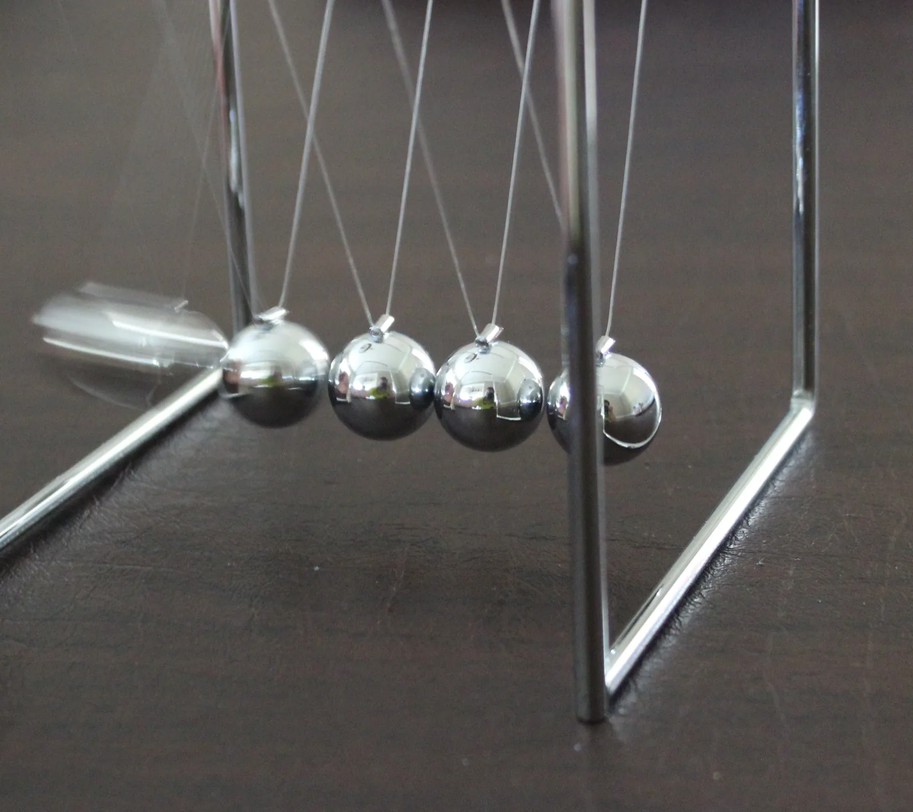

Liikemäärän säilyminen ja yksiulotteiset törmäykset
Miksi biljardin lyöntipallo voi pysähtyä paikalleen, kun se osuu suoraan levossa olevaan palloon? Toinen pallo jatkaa silloin matkaa lähes samalla nopeudella.
Pohjatiedot
- Kappaleen liikemäärä on $\overline{p} = m\overline{v}$. Vakiosuuruisen kokonaisvoiman impulssi muuttaa sitä: $\Delta\overline{p} = \Sigma\overline{F}\,\Delta t$luku Liikemäärä ja impulssi
- Kappaleen liike-energia on $E_\text{k} = \tfrac12 mv^2$. Kitkan kaltaiset voimat muuttavat mekaanista energiaa sisäenergiaksiluku Mekaanisen energian säilyminen ja energiaperiaate
Ydinpolku: tee vaiheet järjestyksessä. Ydinpolulla ei vain lasketa. Siinä myös tutkitaan, selitetään ja piirretään kuvaajia. Valinnainen-tehtävät ovat lisäharjoittelua. Valinnaisia tehtäviä on 5.
Luvun tärkeät käsitteet Vapaaehtoinen
Tutustu luvun tärkeisiin käsitteisiin. Voit kirjoittaa niiden merkitykset sinulle vahvimmalla kielellä tai useammalla kielellä.
- Liikemäärän säilyminen
- Kun ulkoiset voimat eivät muuta liikettä, kappaleiden yhteinen liikemäärä pysyy samana.
- Kimmoisa törmäys
- Törmäys, jossa kappaleiden yhteinen liike-energia on lopussa yhtä suuri kuin alussa.
- Kimmoton törmäys
- Törmäys, jossa osa liike-energiasta muuttuu muuksi energiaksi, esimerkiksi lämmöksi.
- Räjähdys
- Levossa olevat kappaleet lähtevät liikkeelle eri suuntiin. Yhteinen liikemäärä pysyy nollana.
Pohdinta
Biljardipöydällä punainen pallo on levossa. Pelaaja lyö valkoisen lyöntipallon suoraan sitä kohti. Pallot kopsahtavat, ja hetkessä tilanne on muuttunut. Lyöntipallo on pysähtynyt melkein siihen, missä punainen pallo oli. Punainen pallo kiitää eteenpäin lähes samalla nopeudella kuin lyöntipallo äsken. Jos punainen pallo olisi raskas keilapallo, lyöntipallo kimpoaisi takaisin.
Mikä ratkaisee, miten liike jakautuu törmäävien kappaleiden kesken? Miksi lyöntipallo pysähtyy juuri silloin, kun se osuu samanlaiseen palloon?
Valinnainen Kertaa: impulssi
Ennusta
Tee ennusteet ennen tutkimista 3 kysymystä
Ennuste 1: vaunut tarttuvat yhteen
Ennuste 2: kimmoisa törmäys
Valinnainen Ennuste 3: räjähdys
Tutki
Simulaatio
Käyttöohje
Valitse tilanne, vaunujen massat ja alkunopeudet. Positiivinen suunta on oikealle, joten vasemmalle liikkuvan vaunun nopeus on negatiivinen. Paina Käynnistä. Kun törmäys on ohi, lukemiin tulevat nopeudet $v_1'$ ja $v_2'$, kokonaisliikemäärä $p_\text{kok}'$ ja liike-energia $E_\text{k}'$ törmäyksen jälkeen. Energiapylväässä ovat päällekkäin liike-energia $E_\text{k}$, puskurin tai jousen energia $E_\text{p}$ ja sisäenergia $E_\text{sis}$. Katkoviiva näyttää alkuperäisen kokonaisenergian. Räjähdyksessä vaunut ovat aluksi levossa, joten nopeuksien liukusäätimet eivät ole käytössä. Alusta palauttaa vaunut lähtöpaikoilleen. Nopeus hidastaa tai nopeuttaa liikettä. Lukemat eivät muutu.
Mallin oletukset
Arvot ovat simulaation laskemia mallin arvoja. Rata on vaakasuora, ja kitka ja ilmanvastus jätetään huomiotta. Vaunujen paino ja radan tukivoima kumoavat toisensa, joten ulkoisten voimien summa ei muuta liikemäärää. Törmäyksessä vaunujen puskurit puristuvat. Puskurit työntävät vaunuja yhtä suurilla voimilla vastakkaisiin suuntiin. Törmäyksen aikana osa liike-energiasta on hetken puristuneen puskurin potentiaalienergiaa. Siksi vaunujen yhteinen liike-energia pienenee hetkeksi myös kimmoisassa törmäyksessä. Jousipuskuri palauttaa kaiken puristumiseen kuluneen energian. Pehmeä puskuri ja tarranauha muuttavat osan liike-energiasta sisäenergiaksi. Tarranauhalla vaunut jäävät kiinni toisiinsa. Silloin puskuri jää kokoon puristuneeksi, ja sen energia muuttuu sisäenergiaksi. Räjähdyksessä vaunujen välissä on $4{,}0\,\text{cm}$ puristettu jousi, johon on varastoitunut $0{,}24\,\text{J}$ energiaa.
Laskennan selitys
Puskurien voima lasketaan puristumasta ja vaunujen suhteellisesta nopeudesta. Vaunujen liike lasketaan Newtonin toisesta laista $0{,}2\,\text{ms}$:n aika-askelin. Liikemäärät $p = mv$ ja liike-energiat $E_\text{k} = \tfrac12 mv^2$ lasketaan vaunujen nopeuksista. Arvot $p_\text{kok}$ ja $E_\text{k}$ ovat kummankin vaunun arvojen summat. Puskurin energia on $E_\text{p} = \tfrac12 kd^2$, missä $d$ on puristuma ja $k = 300\,\text{N/m}$. Sisäenergia $E_\text{sis}$ lasketaan puskurin vaimennuksen tekemästä työstä. Summa $E_\text{k} + E_\text{p} + E_\text{sis}$ pysyy koko ajan alkuperäisenä. Lukemat "Jälkeen" otetaan hetkellä, jolloin puskurit irtoavat toisistaan tai vaunut tarttuvat yhteen. Liikemäärän säilymistä ei ole kirjoitettu malliin. Se seuraa siitä, että puskurien voimat ovat yhtä suuret ja vastakkaissuuntaiset.
Simulaatiossa kaksi vaunua törmää vaakasuoralla ilmatyynyradalla. Alhaalla olevat pylväät näyttävät vaunujen liikemäärät ja energian. Energia on liike-energiaa, puskurin energiaa ja sisäenergiaa. Pylväät näkyvät ennen törmäystä ja joka hetki.
Koe 1: täysin kimmoton törmäys
Testaa ensimmäinen ennuste. Alkutila valitsee tarranauhat. Vaunun 1 massa on $0{,}40\,\text{kg}$ ja nopeus $0{,}60\,\text{m/s}$, ja vaunu 2 on levossa. Ennen törmäystä kokonaisliikemäärä on silloin $0{,}240\,\text{kg}\cdot\text{m/s}$ ja liike-energia $0{,}072\,\text{J}$ (lukemat Ennen). Muuta vain vaunun 2 massaa. Paina joka kerta Käynnistä. Kirjaa mittaus, kun vaunut ovat tarttuneet yhteen.
Alkutila: tilanne: täysin kimmoton (tarranauha), massa $m_1$: $0{,}40\,\text{kg}$, alkunopeus $v_1$ = $0{,}6\,\text{m/s}$, alkunopeus $v_2$ = $0\,\text{m/s}$, massa $m_2$: $0{,}40\,\text{kg}$. Vakiona: tilanne, massa $m_1$, alkunopeus $v_1$, alkunopeus $v_2$. Muutetaan: massa $m_2$.
| massa $m_2$ | $v'$ $(\text{m/s})$ | $p_\text{kok}'$ (kg·m/s) | $E_\text{k}'$ $(\text{J})$ |
|---|
Lisää tutkittavaa 3 tehtävää
Koe 2: kimmoisa törmäys
Testaa toinen ennuste. Alkutila valitsee jousipuskurin. Vaunun 1 massa on $0{,}40\,\text{kg}$ ja nopeus $0{,}60\,\text{m/s}$, ja vaunu 2 on levossa. Muuta vain vaunun 2 massaa, esimerkiksi arvoihin $0{,}20$, $0{,}40$ ja $0{,}60\,\text{kg}$. Kirjaa mittaus, kun törmäys on ohi.
Alkutila: tilanne: kimmoisa törmäys (jousi), massa $m_1$: $0{,}40\,\text{kg}$, alkunopeus $v_1$ = $0{,}6\,\text{m/s}$, alkunopeus $v_2$ = $0\,\text{m/s}$, massa $m_2$: $0{,}40\,\text{kg}$. Vakiona: tilanne, massa $m_1$, alkunopeus $v_1$, alkunopeus $v_2$. Muutetaan: massa $m_2$.
| massa $m_2$ | $v_1'$ $(\text{m/s})$ | $v_2'$ $(\text{m/s})$ | $p_\text{kok}'$ (kg·m/s) | $E_\text{k}'$ $(\text{J})$ |
|---|
Valinnainen Koe 3: räjähdys
Testaa kolmas ennuste. Alkutila valitsee räjähdyksen. Vaunun 1 massa on $0{,}40\,\text{kg}$. Vaunut ovat aluksi levossa. Muuta vain vaunun 2 massaa. Kirjaa mittaus, kun vaunut ovat irronneet toisistaan.
Alkutila: tilanne: räjähdys (jousi laukeaa), massa $m_1$: $0{,}40\,\text{kg}$, massa $m_2$: $0{,}20\,\text{kg}$. Vakiona: tilanne, massa $m_1$. Muutetaan: massa $m_2$.
| massa $m_2$ | $v_1'$ $(\text{m/s})$ | $v_2'$ $(\text{m/s})$ | $p_\text{kok}'$ (kg·m/s) |
|---|
Johtopäätös
Selitä mittaustesi avulla, mikä säilyy kaikissa törmäyksissä. Selitä myös, mikä säilyy vain kimmoisassa törmäyksessä. Selitä sitten Newtonin kolmannen lain avulla, miksi vaunu 1 menettää yhtä paljon liikemäärää kuin vaunu 2 saa.
Mallivastaus
Kokeessa 1 vaunut tarttuivat yhteen. Mallin arvoissa kokonaisliikemäärä oli $0{,}240\,\text{kg}\cdot\text{m/s}$ sekä ennen että jälkeen kaikilla vaunun 2 massoilla. Liike-energia kuitenkin pieneni, esimerkiksi $0{,}072\,\text{J}$:sta $0{,}036\,\text{J}$:iin, kun vaunut olivat samanmassaiset. Tarranauha muutti osan liike-energiasta sisäenergiaksi. Kokeessa 2 törmäys oli kimmoisa. Mallin arvoissa sekä kokonaisliikemäärä $0{,}240\,\text{kg}\cdot\text{m/s}$ että liike-energia $0{,}072\,\text{J}$ säilyivät joka rivillä. Liikemäärä säilyy, koska puskurit työntävät vaunuja Newtonin kolmannen lain mukaan yhtä suurilla voimilla $\overline{F}$ ja $-\overline{F}$ vastakkaisiin suuntiin. Voimat vaikuttavat saman ajan $\Delta t$. Vaunun 2 liikemäärä kasvaa impulssin $\overline{F}\,\Delta t$ verran. Vaunun 1 liikemäärä muuttuu saman verran vastakkaiseen suuntaan. Tämä pätee, koska ulkoiset voimat eivät muuta liikemäärää: paino ja radan tukivoima kumoavat toisensa, ja kitka on jätetty huomiotta.
Arvioi oma vastauksesi
Merkitse kohdat, jotka sinun vastauksessasi jo on.
Kertaa asia teoriasta ja harjoittele tehtävillä.
Teoria
Ydinajatus
Systeemi ja sen kokonaisliikemäärä
Luvussa Liikemäärä ja impulssi opit, että kappaleen liikemäärä on $\overline{p} = m\overline{v}$. Opit myös, että vakiosuuruisen kokonaisvoiman impulssi muuttaa liikemäärää: $\Delta\overline{p} = \Sigma\overline{F}\,\Delta t$. Törmäyksessä on kuitenkin kaksi kappaletta, jotka vaikuttavat toisiinsa. Siksi tarkastellaan niitä yhdessä systeeminä. Systeemi on kappaleiden joukko, jota tutkitaan yhtenä kokonaisuutena. Systeemin kokonaisliikemäärä on sen kappaleiden liikemäärien vektorisumma, $\overline{p}_\text{kok} = \overline{p}_1 + \overline{p}_2$.
Systeemin kappaleet vaikuttavat toisiinsa sisäisillä voimilla. Esimerkki ovat vaunujen puskurien voimat toisiinsa törmäyksessä. Voimat, jotka tulevat systeemin ulkopuolelta, ovat ulkoisia voimia. Esimerkkejä ovat vaunujen paino, radan tukivoima ja kitka.
Miksi kokonaisliikemäärä säilyy
Vaunu 1 työntää vaunua 2 voimalla $\overline{F}$. Newtonin kolmannen lain mukaan vaunu 2 työntää silloin vaunua 1 yhtä suurella voimalla $-\overline{F}$ vastakkaiseen suuntaan. Voimat alkavat ja loppuvat samalla hetkellä, joten ne vaikuttavat saman ajan $\Delta t$. Oletetaan, että voima on vakio. Silloin vaunun 2 liikemäärä muuttuu impulssin $\overline{F}\,\Delta t$ verran. Vaunun 1 liikemäärä muuttuu yhtä paljon vastakkaiseen suuntaan. Toinen vaunu saa liikemäärää täsmälleen sen verran kuin toinen menettää. Kokonaisliikemäärä ei muutu. Sama pätee, vaikka voima muuttuisi törmäyksen aikana. Voimat ovat nimittäin joka hetki yhtä suuret ja vastakkaissuuntaiset.
Tämä päättely toimii vain, jos ulkoiset voimat eivät muuta liikemäärää. Vaakasuoralla ilmatyynyradalla paino ja tukivoima kumoavat toisensa. Kitka on hyvin pieni. Törmäävät autot taas kokevat tien kitkan. Törmäys kestää kuitenkin vain sekunnin murto-osan. Silloin puskurien voimat ovat paljon suurempia kuin kitka. Kitkan impulssi jää siksi törmäyksen aikana niin pieneksi, ettei sillä ole merkitystä. Tästä saadaan liikemäärän säilymislaki: kun systeemiin vaikuttavien ulkoisten voimien summa on nolla tai niiden impulssi on törmäyksen aikana merkityksettömän pieni, systeemin kokonaisliikemäärä säilyy.
Törmäysten lajit
Liikemäärä säilyy jokaisessa törmäyksessä, kun säilymislain ehto täyttyy. Liike-energia ei säily aina. Törmäys on kimmoisa, jos kappaleiden yhteinen liike-energia on törmäyksen jälkeen yhtä suuri kuin ennen sitä. Teräskuulat, biljardipallot ja jousipuskurilla varustetut vaunut törmäävät lähes kimmoisasti. Törmäys on kimmoton, jos osa liike-energiasta muuttuu muiksi energiamuodoiksi. Kappaleet muuttavat silloin muotoaan. Liike-energiaa muuttuu niiden sisäenergiaksi ja ääneksi. Joskus kappaleet jäävät kiinni toisiinsa ja jatkavat yhdessä. Silloin törmäys on täysin kimmoton, ja liike-energia pienenee mahdollisimman paljon. Silloin mahdollisimman suuri osa siitä muuttuu muiksi energiamuodoiksi.
Kuvassa samanmassaiset vaunut tarttuvat yhteen tarranauhalla. Kokonaisliikemäärä on sama ennen ja jälkeen. Nyt sama liikemäärä jakautuu kaksinkertaiselle massalle, joten yhteinen nopeus on puolet alkuperäisestä. Liike-energia $\tfrac12 mv^2$ ei säily: kaksinkertainen massa ja puolet nopeudesta antavat puolet alkuperäisestä liike-energiasta. Toinen puoli muuttuu tarranauhan ja vaunujen sisäenergiaksi.
Räjähdys
Räjähdyksessä levossa oleva tai yhdessä liikkuva systeemi hajoaa osiin sisäisten voimien vaikutuksesta. Esimerkkejä ovat jousi, joka laukeaa vaunujen välissä, luistelijat, jotka työntävät toisiaan, ja ruuti, joka työntää luotia ja kivääriä. Jos systeemi on aluksi levossa, sen kokonaisliikemäärä on nolla ja pysyy nollana. Kun levossa oleva systeemi hajoaa kahdeksi osaksi, osat saavat yhtä suuret liikemäärät vastakkaisiin suuntiin. Kevyempi osa saa suuremman nopeuden. Siksi kivääri potkaisee taaksepäin, kun luoti lähtee eteenpäin. Jos osia on useampia, niiden liikemäärien vektorisumma on nolla. Yksittäisten osien liikemäärät voivat silloin olla erisuuruisia. Räjähdyksessä liike-energia kasvaa, koska jousen, lihasten tai ruudin energiaa muuttuu liike-energiaksi.
Vastaus alun kysymykseen
Biljardipallot ovat yhtä raskaita, ja niiden törmäys on lähes kimmoisa. Lyöntipallon nopeus on $v$. Liikemäärän säilymisestä seuraa, että pallojen nopeuksien summa pysyy samana: $v_1' + v_2' = v$. Liike-energian säilymisestä seuraa, että nopeuksien neliöiden summa pysyy samana: $v_1'^2 + v_2'^2 = v^2$. Korotetaan ensimmäinen ehto toiseen potenssiin ja vähennetään siitä toinen ehto. Saadaan $2 v_1' v_2' = 0$, joten toinen palloista on törmäyksen jälkeen levossa. Lyöntipallo ei voi kulkea toisen pallon läpi, joten se pysähtyy. Toinen pallo jatkaa nopeudella $v$. Oikeassa pelissä pallot myös pyörivät, eikä törmäys ole täysin kimmoisa. Siksi lyöntipallo voi jäädä hiukan liikkeeseen.

Liikemäärän säilymislaki
Säilymislaki vektoreina ja yhdessä ulottuvuudessa
Oletetaan, että systeemiin vaikuttavien ulkoisten voimien summa on nolla tai niiden impulssi on törmäyksen tai räjähdyksen aikana merkityksettömän pieni. Silloin kokonaisliikemäärä on sama ennen ja jälkeen:
$$\overline{p}_1 + \overline{p}_2 = \overline{p}_1' + \overline{p}_2'$$
missä $\overline{p}_1$ ja $\overline{p}_2$ ovat kappaleiden liikemäärät ennen, ja $\overline{p}_1'$ ja $\overline{p}_2'$ ovat liikemäärät jälkeen ($\text{kg}\cdot\text{m/s}$).
Yksiulotteisessa törmäyksessä kaikki nopeudet ovat samalla suoralla. Valitaan positiivinen suunta. Silloin jokainen nopeus on luku, jolla on etumerkki. Vastakkaiseen suuntaan liikkuvan kappaleen nopeus on negatiivinen. Säilymislaki tulee muotoon
$$\begin{aligned} &m_1 v_1 + m_2 v_2 \\ \quad &= m_1 v_1' + m_2 v_2' \end{aligned}$$
missä $m_1$ ja $m_2$ ovat kappaleiden massat ($\text{kg}$), $v_1$ ja $v_2$ ovat niiden nopeudet ennen, ja $v_1'$ ja $v_2'$ ovat nopeudet jälkeen ($\text{m/s}$).
Täysin kimmoton törmäys
Joskus kappaleet jäävät kiinni toisiinsa. Silloin niillä on törmäyksen jälkeen yhteinen nopeus $v'$:
$$\begin{aligned} &m_1 v_1 + m_2 v_2 \\ \quad &= (m_1 + m_2)\,v' \end{aligned}$$
missä $v'$ on nopeus, jolla kappaleet liikkuvat yhdessä törmäyksen jälkeen ($\text{m/s}$). Esimerkki: $0{,}40\,\text{kg}$:n vaunu liikkuu nopeudella $0{,}60\,\text{m/s}$ ja tarttuu levossa olevaan samanlaiseen vaunuun. Yhteinen nopeus on $0{,}30\,\text{m/s}$. Liike-energia pienenee $0{,}072\,\text{J}$:sta $0{,}036\,\text{J}$:iin.
Kimmoisa törmäys
Kimmoisassa törmäyksessä säilyy liikemäärä. Lisäksi säilyy kappaleiden yhteinen liike-energia:
$$\begin{aligned} &E_{\text{k},1} + E_{\text{k},2} \\ \quad &= E_{\text{k},1}' + E_{\text{k},2}' \end{aligned}$$
missä $E_\text{k} = \tfrac12 mv^2$ on kappaleen liike-energia ennen törmäystä ja $E_\text{k}'$ sen liike-energia törmäyksen jälkeen ($\text{J}$). Kun tunnetaan toisen kappaleen nopeus törmäyksen jälkeen, toinen nopeus saadaan liikemäärän säilymislaista. Vertaamalla liike-energioita nähdään, oliko törmäys kimmoisa. Ajatellaan, että kappale osuu suoraan samanmassaiseen kappaleeseen, joka on levossa, ja törmäys on kimmoisa. Silloin kappaleet vaihtavat nopeuksia.
Joskus ulkoiset voimat vaikuttavat. Silloin liikemäärän säilymislakia käytetään vain itse törmäyksen tai räjähdyksen yli, lyhyen ajan alusta loppuun. Ennen törmäystä ja sen jälkeen ulkoiset voimat, kuten kitka tai paino, voivat muuttaa kappaleiden liikettä. Silloin liikettä tarkastellaan muilla laeilla, esimerkiksi energiaperiaatteella.
Yleinen virhekäsitys
Moni ajattelee, että liike-energia säilyy törmäyksessä samalla tavalla kuin liikemäärä. Liikemäärä säilyy aina, kun ulkoisten voimien impulssi on niin pieni, ettei sillä ole merkitystä. Liike-energia säilyy vain kimmoisassa törmäyksessä. Jos yhteen tarttuvien vaunujen nopeus lasketaan liike-energian säilymisestä, tulos on liian suuri.
Toinen virhe on unohtaa etumerkit. Jos kappaleet liikkuvat toisiaan kohti, niiden liikemäärät ovat vastakkaissuuntaiset. Silloin toinen liikemääristä on negatiivinen. Kolmas virhe on ajatella, että liikemäärä katoaa, kun lattialle pudonnut savipallo pysähtyy. Pallon liikemäärä siirtyy Maahan. Pallo ja Maa muodostavat systeemin, ja sen kokonaisliikemäärä säilyy. Maan massa on kuitenkin niin suuri, ettei sen nopeuden muutosta huomaa.
Tiivistelmä
- Systeemin kokonaisliikemäärä säilyy, kun ulkoisten voimien summa on nolla. Se säilyy myös, kun ulkoisten voimien impulssi on törmäyksen tai räjähdyksen aikana niin pieni, ettei sillä ole merkitystä: $\overline{p}_1 + \overline{p}_2 = \overline{p}_1' + \overline{p}_2'$.
- Säilyminen seuraa Newtonin kolmannesta laista. Törmäyksen sisäiset voimat ovat yhtä suuret ja vastakkaissuuntaiset, ja ne vaikuttavat saman ajan. Siksi kappaleiden liikemäärien muutokset kumoavat toisensa.
- Yhdessä ulottuvuudessa valitaan positiivinen suunta, ja nopeuksilla on etumerkit: $m_1 v_1 + m_2 v_2 = m_1 v_1' + m_2 v_2'$.
- Kimmoisassa törmäyksessä myös liike-energia säilyy. Kimmottomassa törmäyksessä osa liike-energiasta muuttuu sisäenergiaksi. Täysin kimmottomassa törmäyksessä kappaleet jatkavat yhdessä yhteisellä nopeudella.
- Räjähdyksessä levossa olevan systeemin kokonaisliikemäärä pysyy nollana. Kun systeemi hajoaa kahdeksi osaksi, osat saavat yhtä suuret liikemäärät vastakkaisiin suuntiin. Liike-energia kasvaa.
Valinnainen Palaa ennusteisiisi
Vertaa ennusteitasi simulaation lukemiin. Mikä yllätti eniten? Kirjoita omin sanoin, milloin törmäyksen voi ratkaista pelkällä liikemäärän säilymislailla. Kirjoita myös, milloin tarvitaan lisäksi liike-energiaa.
Haluaisitko muuttaa ennustettasi?
Esimerkit
Kun olet lukenut teorian, tee ohjatut esimerkit. Ensin katsot mallilaskun vaihe vaiheelta. Sitten teet valinnat itse. Vihjeet auttavat, jos jäät jumiin.
Esimerkki 1: Junavaunujen törmäys
Ratapihalla tavaravaunu A, jonka massa on $32\,000\,\text{kg}$, liikkuu nopeudella $1{,}5\,\text{m/s}$. Se saavuttaa samaan suuntaan nopeudella $0{,}50\,\text{m/s}$ liikkuvan vaunun B, jonka massa on $18\,000\,\text{kg}$. Vaunut kytkeytyvät yhteen ja jatkavat yhdessä. Kuinka suuri on vaunujen yhteinen nopeus heti kytkeytymisen jälkeen?
Vaihe 1/7
Tunnetut ja kysytty. $m_\text{A} = 32\,000\,\text{kg}$, $v_\text{A} = 1{,}5\,\text{m/s}$, $m_\text{B} = 18\,000\,\text{kg}$ ja $v_\text{B} = 0{,}50\,\text{m/s}$. Kysytään vaunujen yhteistä nopeutta $v'$ heti sen jälkeen, kun ne ovat kytkeytyneet.
Vaihe 2/7
Periaate. Valitaan systeemiksi molemmat vaunut. Positiivinen suunta on vaunujen liikkeen suunta. Kytkeytyminen kestää hetken. Sen aikana kytkinten voimat ovat sisäisiä voimia. Paino ja kiskojen tukivoima kumoavat toisensa. Vierimisvastuksen impulssi on lyhyen kytkeytymisen aikana niin pieni, ettei sillä ole merkitystä. Siksi kokonaisliikemäärä säilyy. Vaunut jäävät kiinni toisiinsa, joten törmäys on täysin kimmoton.
Vaihe 3/7
Kaava ratkaistuna. Vaunujen liikemäärä ennen kytkeytymistä on yhtä suuri kuin yhteen kytkeytyneiden vaunujen liikemäärä sen jälkeen:
$$\begin{aligned} &m_\text{A} v_\text{A} + m_\text{B} v_\text{B} \\ \quad &= (m_\text{A} + m_\text{B})\,v' \\[6pt] v' &= \frac{m_\text{A} v_\text{A} + m_\text{B} v_\text{B}}{m_\text{A} + m_\text{B}} \end{aligned}$$
Vaihe 4/7
Yksikkömuunnokset. Muunnoksia ei tarvita, koska massat ovat kilogrammoina ja nopeudet yksikössä $\text{m/s}$.
Vaihe 5/7
Sijoitus. Lasketaan ensin liikemäärät ennen kytkeytymistä. Sitten lasketaan yhteinen nopeus:
$$\begin{aligned} &m_\text{A} v_\text{A} \\ &= 32\,000\,\text{kg} \cdot 1{,}5\,\tfrac{\text{m}}{\text{s}} \\ &= 48\,000\,\text{kg}\cdot\tfrac{\text{m}}{\text{s}} \\[6pt] &m_\text{B} v_\text{B} \\ &= 18\,000\,\text{kg} \cdot 0{,}50\,\tfrac{\text{m}}{\text{s}} \\ &= 9000\,\text{kg}\cdot\tfrac{\text{m}}{\text{s}} \\[6pt] &v' \\ &= \frac{48\,000 + 9000}{50\,000} \cdot \frac{\text{kg}\cdot\text{m/s}}{\text{kg}} \\ &= 1{,}14\,\tfrac{\text{m}}{\text{s}} \end{aligned}$$
Vaihe 6/7
Tulos. Vaunujen yhteinen nopeus on $v' \approx 1{,}1\,\text{m/s}$. Vaunut liikkuvat samaan suuntaan kuin ennen. Tulos ilmoitetaan kahdella merkitsevällä numerolla, koska nopeuksissa $1{,}5\,\text{m/s}$ ja $0{,}50\,\text{m/s}$ on kaksi merkitsevää numeroa.
Vaihe 7/7
Järkevyys. Yhteinen nopeus on vaunujen alkunopeuksien $0{,}50\,\text{m/s}$ ja $1{,}5\,\text{m/s}$ välissä. Se on lähempänä raskaamman vaunun A nopeutta, kuten pitääkin. Liike-energia pienenee $38{,}3\,\text{kJ}$:sta $32{,}5\,\text{kJ}$:iin eli noin $15\,\%$. Se sopii täysin kimmottomaan törmäykseen: liike-energiaa muuttuu kytkimien ja puskurien sisäenergiaksi ja ääneksi.
Valinnainen Esimerkki 2: Etsi virhe
Esimerkki 3: Sovella uuteen tilanteeseen
Poika, jonka massa on $50\,\text{kg}$, seisoo levossa olevassa soutuveneessä. Veneen massa on $120\,\text{kg}$. Poika hyppää veneestä laiturille vaakasuoralla nopeudella $2{,}4\,\text{m/s}$ laituriin (maahan) nähden. Veden vastus jätetään huomiotta, koska ponnistus kestää vain hetken.
Millä nopeudella vene lähtee liikkeelle? Vastaa yksikössä $\text{m/s}$.
Vihje 1: ohjaava kysymys
Valitse systeemiksi poika ja vene. Kuinka suuri on systeemin kokonaisliikemäärä ennen hyppyä?
Vihje 2: mikä yhteys
Ponnistuksessa poika ja vene työntävät toisiaan, joten kyse on räjähdyksestä: $0 = m_\text{poika} v_\text{poika} + m_\text{vene} v_\text{vene}$.
Vihje 3: välivaihe
Ratkaise
Miinusmerkki kertoo, että vene liikkuu vastakkaiseen suuntaan.
Näytä ratkaisu
Annettu
pojan massa $m_\text{p} = 50\,\text{kg}$, veneen massa $m_\text{v} = 120\,\text{kg}$, pojan nopeus hypyn jälkeen laituriin nähden $v_\text{p}' = 2{,}4\,\text{m/s}$; aluksi molemmat ovat levossa
Kysytty
veneen nopeus $v_\text{v}'$ yksikössä $\text{m/s}$
Periaate
Valitaan systeemiksi poika ja vene. Positiivinen suunta on pojan hypyn suunta. Ponnistuksessa poika ja vene työntävät toisiaan yhtä suurilla voimilla vastakkaisiin suuntiin. Ne ovat sisäisiä voimia. Vaakasuunnassa ei vaikuta muita voimia kuin veden vastus. Se jätetään huomiotta, koska ponnistus kestää vain hetken. Siksi vaakasuuntainen kokonaisliikemäärä säilyy. Alussa se on nolla, joten tilanne on räjähdys.
Kaava
$0 = m_\text{p} v_\text{p}' + m_\text{v} v_\text{v}'$, joten
Muunnokset
Muunnoksia ei tarvita, koska massat ovat kilogrammoina ja nopeus yksikössä $\text{m/s}$.
Sijoitus
Vastaus
$1{,}0\,\text{m/s}$
Poispäin laiturista. Vastauksessa on kaksi merkitsevää numeroa, koska nopeudessa $2{,}4\,\text{m/s}$ on kaksi. Miinusmerkki kertoo, että vene liikkuu vastakkaiseen suuntaan kuin poika.
Järkevyys
Vene on $2{,}4$ kertaa niin raskas kuin poika, joten sen nopeus on $2{,}4$ kertaa pienempi: $2{,}4\,\text{m/s} : 2{,}4 = 1{,}0\,\text{m/s}$.
Kertaa luvun käsitteet
Jos valitset Kertaa myöhemmin, kortti menee kertauspakkaasi.
- Liikemäärän säilyminen
- Eristetyn systeemin kokonaisliikemäärä pysyy vuorovaikutuksessa muuttumattomana.
- Törmäys
- Lyhytkestoinen vuorovaikutus, jossa kappaleiden nopeudet ja liikemäärät voivat muuttua nopeasti.
- Kimmoisa törmäys
- Kokonaisliikemäärän lisäksi myös kappaleiden yhteenlaskettu liike-energia säilyy.
- Kimmoton törmäys
- Kokonaisliikemäärä säilyy, mutta osa liike-energiasta muuttuu muihin energiamuotoihin.
- Täysin kimmoton törmäys
- Törmäyksen jälkeen kappaleet liikkuvat yhdessä samalla nopeudella.
- Yksiulotteinen törmäys
- Kappaleiden liike tapahtuu samalla suoralla, joten liikemäärän suunnat voidaan käsitellä etumerkeillä.
Tehtävät
Taso 1 · perusharjoitus 8 tehtävää
Yksi kaava tai yksi päättelyaskel. Tee ensin ydintehtävät. Loput ovat lisäharjoitusta.
- Tehtävä 14-1
Ilmatyynyradalla $0{,}40\,\text{kg}$:n vaunu liikkuu nopeudella $0{,}50\,\text{m/s}$ oikealle. $0{,}25\,\text{kg}$:n vaunu liikkuu nopeudella $0{,}60\,\text{m/s}$ vasemmalle. Kuinka suuri on vaunujen kokonaisliikemäärä, kun oikealle on positiivinen suunta? Ilmoita liikemäärä etumerkkeineen.
Vastaus
$0{,}050\,\text{kg}\cdot\text{m/s}$
Näytä ratkaisu
Annettu
$m_1 = 0{,}40\,\text{kg}$, $v_1 = +0{,}50\,\text{m/s}$ (oikealle), $m_2 = 0{,}25\,\text{kg}$, $v_2 = -0{,}60\,\text{m/s}$ (vasemmalle); positiivinen suunta on oikealle
Kysytty
kokonaisliikemäärä $p_\text{kok}$ etumerkkeineen yksikössä $\text{kg}\cdot\text{m/s}$
Periaate
Systeemin kokonaisliikemäärä on vaunujen liikemäärien vektorisumma. Yhdessä ulottuvuudessa se on liikemäärien summa, kun liikemäärillä on etumerkit. Vasemmalle liikkuvan vaunun nopeus ja liikemäärä ovat negatiivisia.
Kaava
$p_\text{kok} = m_1 v_1 + m_2 v_2$
Muunnokset
Muunnoksia ei tarvita, koska massat ovat kilogrammoina ja nopeudet yksikössä $\text{m/s}$.
Sijoitus
$p_\text{kok}$$= (0{,}40 \cdot 0{,}50 + 0{,}25 \cdot (-0{,}60))\,\text{kg}\cdot\text{m/s}$$= (0{,}20 - 0{,}15)\,\text{kg}\cdot\text{m/s}$$= 0{,}050\,\text{kg}\cdot\text{m/s}$Vastaus
$0{,}050\,\text{kg}\cdot\text{m/s}$
Eli oikealle. Vastauksessa on kaksi merkitsevää numeroa, koska massoissa ja nopeuksissa on kaksi.
Järkevyys
Kokonaisliikemäärä on positiivinen, koska oikealle liikkuvan vaunun liikemäärä $0{,}20\,\text{kg}\cdot\text{m/s}$ on suurempi kuin vasemmalle liikkuvan $0{,}15\,\text{kg}\cdot\text{m/s}$. Se on pienempi kuin kummankin vaunun liikemäärä, koska liikemäärät osoittavat vastakkaisiin suuntiin ja kumoavat toisensa osittain.
- Tehtävä 14-2Ydintehtävä
Ilmatyynyradalla $0{,}50\,\text{kg}$:n vaunu liikkuu nopeudella $0{,}80\,\text{m/s}$. Se törmää levossa olevaan $0{,}30\,\text{kg}$:n vaunuun. Vaunut jäävät kiinni toisiinsa. Kitka jätetään huomiotta. Millä nopeudella vaunut jatkavat yhdessä?
Vastaus
$0{,}50\,\text{m/s}$
Näytä ratkaisu
Annettu
$m_1 = 0{,}50\,\text{kg}$, $v_1 = 0{,}80\,\text{m/s}$, $m_2 = 0{,}30\,\text{kg}$, $v_2 = 0$; vaunut jäävät kiinni toisiinsa
Kysytty
yhteinen nopeus $v'$ yksikössä $\text{m/s}$
Periaate
Valitaan systeemiksi molemmat vaunut. Positiivinen suunta on vaunun 1 liikesuunta. Ilmatyynyrata on vaakasuora, joten paino ja tukivoima kumoavat toisensa. Kitka jätetään huomiotta. Kokonaisliikemäärä säilyy. Vaunut jatkavat yhdessä, joten törmäys on täysin kimmoton.
Kaava
$m_1 v_1 + m_2 v_2 = (m_1 + m_2)\,v'$, ja $v_2 = 0$, joten $v' = \dfrac{m_1 v_1}{m_1 + m_2}$
Muunnokset
Muunnoksia ei tarvita, koska massat ovat kilogrammoina ja nopeus yksikössä $\text{m/s}$.
Sijoitus
$v'$$= \dfrac{0{,}50\,\text{kg} \cdot 0{,}80\,\text{m/s}}{0{,}50\,\text{kg} + 0{,}30\,\text{kg}}$$= \dfrac{0{,}40\,\text{kg}\cdot\text{m/s}}{0{,}80\,\text{kg}}$$= 0{,}50\,\text{m/s}$Vastaus
$0{,}50\,\text{m/s}$
Vaunun 1 alkuperäiseen liikesuuntaan. Vastauksessa on kaksi merkitsevää numeroa, koska lähtötiedoissa on kaksi.
Järkevyys
Yhteinen nopeus on pienempi kuin vaunun 1 alkunopeus. Syy on se, että sama liikemäärä jakautuu suuremmalle massalle. Massa kasvaa suhteessa $0{,}80 : 0{,}50 = 1{,}6$. Nopeus pienenee samassa suhteessa: $0{,}80\,\text{m/s} : 1{,}6 = 0{,}50\,\text{m/s}$.
- Tehtävä 14-3
Kaksi luistelijaa seisoo levossa jäällä vastakkain ja työntää toisiaan. Luistelijoiden massat ovat $60\,\text{kg}$ ja $45\,\text{kg}$. Työnnön jälkeen kevyempi luistelija liukuu nopeudella $1{,}2\,\text{m/s}$. Jään kitka jätetään huomiotta, koska työntö kestää vain hetken.
Millä nopeudella raskaampi luistelija liukuu?
Vastaus
$0{,}90\,\text{m/s}$
Näytä ratkaisu
Annettu
$m_1 = 60\,\text{kg}$, $m_2 = 45\,\text{kg}$, kevyemmän luistelijan nopeus $v_2' = 1{,}2\,\text{m/s}$; aluksi molemmat ovat levossa
Kysytty
raskaamman luistelijan nopeus $v_1'$ yksikössä $\text{m/s}$
Periaate
Valitaan systeemiksi molemmat luistelijat. Positiivinen suunta on kevyemmän luistelijan liikesuunta. Luistelijat työntävät toisiaan sisäisillä voimilla. Paino ja jään tukivoima kumoavat toisensa, ja kitka jätetään huomiotta. Kokonaisliikemäärä säilyy. Se on alussa nolla, joten tilanne on räjähdys.
Kaava
$0 = m_1 v_1' + m_2 v_2'$, joten $v_1' = -\dfrac{m_2 v_2'}{m_1}$
Muunnokset
Muunnoksia ei tarvita, koska massat ovat kilogrammoina ja nopeus yksikössä $\text{m/s}$.
Sijoitus
$v_1'$$= -\dfrac{45\,\text{kg} \cdot 1{,}2\,\text{m/s}}{60\,\text{kg}}$$= -\dfrac{54\,\text{kg}\cdot\text{m/s}}{60\,\text{kg}}$$= -0{,}90\,\text{m/s}$Vastaus
$0{,}90\,\text{m/s}$
Vastakkaiseen suuntaan kuin kevyempi luistelija. Vastauksessa on kaksi merkitsevää numeroa, koska nopeudessa $1{,}2\,\text{m/s}$ ja massoissa on kaksi.
Järkevyys
Raskaampi luistelija liikkuu hitaammin, kuten pitääkin. Massojen suhde on $60 : 45 \approx 1{,}33$. Nopeuksien suhde on käänteinen: $1{,}2 : 0{,}90 \approx 1{,}33$. Miinusmerkki kertoo, että luistelijat liikkuvat vastakkaisiin suuntiin.
- Tehtävä 14-4
Ilmakiekkopöydällä kiekko A, jonka massa on $0{,}16\,\text{kg}$, liukuu nopeudella $4{,}0\,\text{m/s}$. Se törmää suoraan levossa olevaan kiekkoon B, jonka massa on $0{,}20\,\text{kg}$. Törmäyksen jälkeen kiekko A liukuu takaisin tulosuuntaansa nopeudella $0{,}44\,\text{m/s}$. Kitka jätetään huomiotta.
Kuinka suuri on kiekon B nopeus törmäyksen jälkeen?
Vastaus
$3{,}6\,\text{m/s}$
Näytä ratkaisu
Annettu
$m_\text{A} = 0{,}16\,\text{kg}$, $v_\text{A} = +4{,}0\,\text{m/s}$, $m_\text{B} = 0{,}20\,\text{kg}$, $v_\text{B} = 0$, kiekon A nopeus jälkeen $v_\text{A}' = -0{,}44\,\text{m/s}$ (takaisin)
Kysytty
kiekon B nopeus $v_\text{B}'$ yksikössä $\text{m/s}$
Periaate
Valitaan systeemiksi molemmat kiekot. Positiivinen suunta on kiekon A alkuperäinen liikesuunta. Ilmakiekkopöydällä paino ja ilmatyynyn tukivoima kumoavat toisensa. Kitka jätetään huomiotta, joten kokonaisliikemäärä säilyy. Kiekko A liikkuu takaisin, joten sen nopeus on negatiivinen.
Kaava
$m_\text{A} v_\text{A} + m_\text{B} v_\text{B}$$= m_\text{A} v_\text{A}' + m_\text{B} v_\text{B}'$ja $v_\text{B} = 0$, joten
$v_\text{B}'$$= \dfrac{m_\text{A} v_\text{A} - m_\text{A} v_\text{A}'}{m_\text{B}}$Muunnokset
Muunnoksia ei tarvita, koska massat ovat kilogrammoina ja nopeudet yksikössä $\text{m/s}$.
Sijoitus
$v_\text{B}'$$= \dfrac{0{,}16 \cdot 4{,}0 - 0{,}16 \cdot (-0{,}44)}{0{,}20}\,\text{m/s}$$= \dfrac{0{,}64 + 0{,}0704}{0{,}20}\,\text{m/s}$$= 3{,}552\,\text{m/s}$Vastaus
$3{,}6\,\text{m/s}$
Kiekon A alkuperäiseen liikesuuntaan. Vastauksessa on kaksi merkitsevää numeroa, koska nopeuksissa $4{,}0\,\text{m/s}$ ja $0{,}44\,\text{m/s}$ on kaksi.
Järkevyys
Kiekko B on raskaampi kuin A. Siksi sen nopeus jää pienemmäksi kuin A:n alkunopeus $4{,}0\,\text{m/s}$, ja kevyempi A kimpoaa takaisin. Liike-energiat: ennen $\tfrac12 \cdot 0{,}16 \cdot 4{,}0^2\,\text{J} = 1{,}28\,\text{J}$, jälkeen $(0{,}015 + 1{,}26)\,\text{J} \approx 1{,}28\,\text{J}$. Törmäys on lähes kimmoisa, mikä sopii koviin kiekkoihin.
- Tehtävä 14-5
Kaksi samanlaista $0{,}30\,\text{kg}$:n vaunua liikkuu ilmatyynyradalla toisiaan kohti. Toinen liikkuu nopeudella $0{,}60\,\text{m/s}$ oikealle ja toinen nopeudella $0{,}20\,\text{m/s}$ vasemmalle. Vaunut törmäävät ja jäävät kiinni toisiinsa. Kitka jätetään huomiotta.
Millä nopeudella vaunut jatkavat yhdessä?
Vastaus
$0{,}20\,\text{m/s}$
Näytä ratkaisu
Annettu
$m_1 = m_2 = 0{,}30\,\text{kg}$, $v_1 = +0{,}60\,\text{m/s}$ (oikealle), $v_2 = -0{,}20\,\text{m/s}$ (vasemmalle); vaunut jäävät kiinni toisiinsa
Kysytty
yhteinen nopeus $v'$ yksikössä $\text{m/s}$
Periaate
Valitaan systeemiksi molemmat vaunut. Positiivinen suunta on oikealle. Paino ja tukivoima kumoavat toisensa, ja kitka jätetään huomiotta. Siksi kokonaisliikemäärä säilyy. Vaunut jatkavat yhdessä, joten törmäys on täysin kimmoton.
Kaava
$m_1 v_1 + m_2 v_2 = (m_1 + m_2)\,v'$, joten
$v'$$= \dfrac{m_1 v_1 + m_2 v_2}{m_1 + m_2}$Muunnokset
Muunnoksia ei tarvita, koska massat ovat kilogrammoina ja nopeudet yksikössä $\text{m/s}$.
Sijoitus
$v'$$= \dfrac{0{,}30 \cdot 0{,}60 + 0{,}30 \cdot (-0{,}20)}{0{,}60}\,\text{m/s}$$= \dfrac{0{,}18 - 0{,}06}{0{,}60}\,\text{m/s}$$= 0{,}20\,\text{m/s}$Vastaus
$0{,}20\,\text{m/s}$
Oikealle. Vastauksessa on kaksi merkitsevää numeroa, koska lähtötiedoissa on kaksi.
Järkevyys
Vaunujen massat ovat yhtä suuret, joten yhteinen nopeus on alkunopeuksien keskiarvo: $(0{,}60 - 0{,}20)\,\text{m/s} : 2 = 0{,}20\,\text{m/s}$. Vaunut liikkuvat oikealle, koska oikealle liikkuneella vaunulla oli suurempi liikemäärä.
- Tehtävä 14-6Ydintehtävä
Kaksi ilmatyynyradan vaunua törmää ja jää kiinni toisiinsa. Ulkoiset voimat ovat törmäyksen aikana niin pieniä, ettei niillä ole merkitystä. Mikä väite tästä täysin kimmottomasta törmäyksestä on oikein?
Vastaus
Liikemäärä säilyy, mutta liike-energia pienenee, koska osa siitä muuttuu sisäenergiaksi.
Näytä ratkaisu
Kysytty
mikä väite täysin kimmottomasta törmäyksestä on oikein
Periaate
Törmäyksen aikana ulkoisten voimien impulssi on hyvin pieni. Silloin vaunujen kokonaisliikemäärä säilyy, koska vaunujen väliset voimat ovat sisäisiä voimia. Kun vaunut jäävät kiinni toisiinsa, törmäys on täysin kimmoton. Silloin osa liike-energiasta muuttuu muodonmuutoksissa sisäenergiaksi ja ääneksi.
Mallivastaus
Oikea väite on, että liikemäärä säilyy mutta liike-energia pienenee, koska osa siitä muuttuu sisäenergiaksi. Väite, että liike-energia säilyy ja liikemäärä pienenee, on päinvastoin kuin oikein. Täysin kimmottomassa törmäyksessä liikemäärä säilyy ja liike-energia pienenee. Väite, että molemmat pienenevät, ei päde. Kiinni tarttuminen ei poista liikemäärää, koska yhteinen nopeus lasketaan juuri liikemäärän säilymisestä. Väite, että liike-energia kasvaa, ei päde. Yhteinen nopeus on pienempi kuin alkunopeus, eikä liike-energiaa synny tyhjästä.
- Tehtävä 14-7
Jäällä levossa seisova luistelija, jonka massa on $35\,\text{kg}$, heittää $2{,}0\,\text{kg}$:n pallon vaakasuoraan nopeudella $6{,}0\,\text{m/s}$ jään suhteen. Kitka jätetään huomiotta heiton ajalta.
Millä nopeudella luistelija liukuu heiton jälkeen? Ilmoita nopeuden suuruus.
Vastaus
$0{,}34\,\text{m/s}$
Näytä ratkaisu
Annettu
luistelijan massa $M = 35\,\text{kg}$, pallon massa $m = 2{,}0\,\text{kg}$, pallon nopeus $v_\text{p}' = 6{,}0\,\text{m/s}$; aluksi molemmat ovat levossa
Kysytty
luistelijan nopeuden suuruus $v_\text{lu}'$ yksikössä $\text{m/s}$
Periaate
Systeeminä ovat luistelija ja pallo, ja positiivinen suunta on pallon lentosuunta. Heittovoimat ovat sisäisiä voimia. Paino ja jään tukivoima kumoavat toisensa, ja kitka jätetään huomiotta. Siksi kokonaisliikemäärä säilyy. Se on alussa nolla, joten heitto on räjähdys. Luistelija saa yhtä suuren liikemäärän kuin pallo mutta vastakkaiseen suuntaan.
Kaava
$0 = m v_\text{p}' + M v_\text{lu}'$, joten
$v_\text{lu}'$$= -\dfrac{m v_\text{p}'}{M}$Muunnokset
Muunnoksia ei tarvita, koska massat ovat kilogrammoina ja nopeus yksikössä $\text{m/s}$.
Sijoitus
$v_\text{lu}'$$= -\dfrac{2{,}0\,\text{kg} \cdot 6{,}0\,\text{m/s}}{35\,\text{kg}}$$= -\dfrac{12\,\text{kg}\cdot\text{m/s}}{35\,\text{kg}}$$= -0{,}342857\,\text{m/s}$Vastaus
$0{,}34\,\text{m/s}$
Pallon lentosuuntaan nähden vastakkaiseen suuntaan. Vastauksessa on kaksi merkitsevää numeroa, koska pallon massassa ja nopeudessa on kaksi.
Järkevyys
Luistelija on $35 : 2{,}0 = 17{,}5$ kertaa niin raskas kuin pallo. Siksi hänen nopeutensa on $17{,}5$ kertaa pienempi: $6{,}0\,\text{m/s} : 17{,}5 = 0{,}34\,\text{m/s}$. Luistelijan liikemäärä on $35 \cdot 0{,}343\,\text{kg}\cdot\text{m/s} = 12\,\text{kg}\cdot\text{m/s}$, sama kuin pallon.
- Tehtävä 14-8
Biljardissa $0{,}17\,\text{kg}$:n lyöntipallo liikkuu nopeudella $1{,}8\,\text{m/s}$ ja osuu suoraan samanlaiseen palloon, joka on levossa. Törmäys on kimmoisa ja kitka jätetään huomiotta.
Kuinka suuri on osuman kohteena olleen pallon nopeus törmäyksen jälkeen?
Vastaus
$1{,}8\,\text{m/s}$
Näytä ratkaisu
Annettu
molempien pallojen massa $m = 0{,}17\,\text{kg}$, lyöntipallon nopeus $v_1 = 1{,}8\,\text{m/s}$, kohdepallo $v_2 = 0$; törmäys on kimmoisa
Kysytty
kohdepallon nopeus $v_2'$ yksikössä $\text{m/s}$
Periaate
Positiivinen suunta on lyöntipallon liikesuunta. Kitka jätetään huomiotta, joten kokonaisliikemäärä säilyy. Törmäys on kimmoisa, joten myös liike-energia säilyy. Kun kappale osuu suoraan samanmassaiseen kappaleeseen, joka on levossa, kappaleet vaihtavat nopeuksia. Lyöntipallo pysähtyy, ja kohdepallo lähtee liikkeelle lyöntipallon nopeudella.
Kaava
$m v_1 = m v_1' + m v_2'$ ja $\tfrac12 m v_1^2 = \tfrac12 m v_1'^2 + \tfrac12 m v_2'^2$, joten $v_1' = 0$ ja $v_2' = v_1$
Muunnokset
Muunnoksia ei tarvita, koska massa on kilogrammoina ja nopeus yksikössä $\text{m/s}$.
Sijoitus
$v_2' = v_1 = 1{,}8\,\text{m/s}$
Vastaus
$1{,}8\,\text{m/s}$
Lyöntipallon alkuperäiseen liikesuuntaan. Vastauksessa on kaksi merkitsevää numeroa, koska nopeudessa on kaksi.
Järkevyys
Liikemäärä ennen törmäystä on
$0{,}17 \cdot 1{,}8\,\text{kg}\cdot\text{m/s}$$= 0{,}306\,\text{kg}\cdot\text{m/s}$ja sen jälkeen
$0{,}17 \cdot 1{,}8\,\text{kg}\cdot\text{m/s}$$= 0{,}306\,\text{kg}\cdot\text{m/s}$Liike-energia ennen ja jälkeen on $\tfrac12 \cdot 0{,}17 \cdot 1{,}8^2\,\text{J} = 0{,}275\,\text{J}$. Molemmat siis säilyvät.
Taso 2 · soveltava harjoitus 8 tehtävää
Kaksi vaihetta, mittausaineiston käsittely, yksikkömuunnos tai kaavan ratkaiseminen. Tee ensin ydintehtävät. Loput ovat lisäharjoitusta.
- Tehtävä 14-9Ydintehtävä
Ilmakivääristä ammutaan $0{,}50\,\text{g}$:n luoti nopeudella $180\,\text{m/s}$. Kiväärin massa on $3{,}2\,\text{kg}$. Kivääri on ennen laukausta levossa, ja ampuja tukee sitä kevyesti. Ampujan tuki jätetään huomiotta, koska laukaus kestää vain hetken.
Millä nopeudella kivääri lähtee liikkumaan taaksepäin?
Vastaus
$0{,}028\,\text{m/s}$
Näytä ratkaisu
Annettu
luodin massa $m_\text{luoti} = 0{,}50\,\text{g}$, luodin nopeus $v_\text{luoti}' = 180\,\text{m/s}$, kiväärin massa $m_\text{kiv} = 3{,}2\,\text{kg}$; aluksi molemmat ovat levossa
Kysytty
kiväärin nopeus $v_\text{kiv}'$ yksikössä $\text{m/s}$
Periaate
Valitaan systeemiksi luoti ja kivääri. Positiivinen suunta on luodin lentosuunta. Laukauksessa paineilma työntää luotia eteenpäin ja kivääriä taaksepäin yhtä suurilla voimilla. Ne ovat sisäisiä voimia. Ampujan tuen impulssi jätetään huomiotta, koska laukaus kestää vain hetken. Kokonaisliikemäärä säilyy. Se on alussa nolla, joten laukaus on räjähdys.
Kaava
$0 = m_\text{luoti} v_\text{luoti}' + m_\text{kiv} v_\text{kiv}'$, joten
$v_\text{kiv}'$$= -\dfrac{m_\text{luoti} v_\text{luoti}'}{m_\text{kiv}}$Muunnokset
$m_\text{luoti}$$= 0{,}50\,\text{g}$$= 0{,}50 \cdot 10^{-3}\,\text{kg}$Sijoitus
$v_\text{kiv}'$$= -\dfrac{0{,}50 \cdot 10^{-3}\,\text{kg} \cdot 180\,\text{m/s}}{3{,}2\,\text{kg}}$$= -\dfrac{0{,}090\,\text{kg}\cdot\text{m/s}}{3{,}2\,\text{kg}}$$= -0{,}028125\,\text{m/s}$Vastaus
$0{,}028\,\text{m/s}$
Eli noin $2{,}8\,\text{cm/s}$ taaksepäin. Vastauksessa on kaksi merkitsevää numeroa, koska luodin massassa $0{,}50\,\text{g}$ ja kiväärin massassa $3{,}2\,\text{kg}$ on kaksi.
Järkevyys
Kivääri on $6400$ kertaa niin raskas kuin luoti. Siksi sen nopeus on $6400$ kertaa pienempi: $180\,\text{m/s} : 6400 \approx 0{,}028\,\text{m/s}$. Ilmakiväärin rekyyli eli potku taaksepäin on tosiaan tuskin tuntuva.
- Tehtävä 14-10
Jääkiekkoilija, jonka massa on $85\,\text{kg}$, liukuu nopeudella $6{,}0\,\text{m/s}$. Hän taklaa paikallaan seisovaa $75\,\text{kg}$:n pelaajaa. Pelaajat liukuvat törmäyksen jälkeen yhdessä. Jään kitka jätetään huomiotta törmäyksen ajalta.
Kuinka paljon pelaajien yhteistä liike-energiaa muuttuu törmäyksessä muiksi energiamuodoiksi?
Vastaus
$720\,\text{J}$
Näytä ratkaisu
Annettu
$m_1 = 85\,\text{kg}$, $v_1 = 6{,}0\,\text{m/s}$, $m_2 = 75\,\text{kg}$, $v_2 = 0$; pelaajat liukuvat törmäyksen jälkeen yhdessä
Kysytty
muiksi energiamuodoiksi muuttuva liike-energia $\Delta E$ yksikössä $\text{J}$
Periaate
Valitaan systeemiksi molemmat pelaajat. Paino ja jään tukivoima kumoavat toisensa. Kitka jätetään huomiotta törmäyksen ajalta, joten kokonaisliikemäärä säilyy. Pelaajat jatkavat yhdessä, joten törmäys on täysin kimmoton, eikä liike-energia säily. Yhteinen nopeus saadaan liikemäärän säilymislaista. Sen avulla lasketaan liike-energia jälkeen.
Kaava
$m_1 v_1 = (m_1 + m_2)\,v'$, joten $v' = \dfrac{m_1 v_1}{m_1 + m_2}$, ja $\Delta E = \tfrac12 m_1 v_1^2 - \tfrac12 (m_1 + m_2)\,v'^2$
Muunnokset
Muunnoksia ei tarvita, koska massat ovat kilogrammoina ja nopeus yksikössä $\text{m/s}$.
Sijoitus
$v'$$= \dfrac{85\,\text{kg} \cdot 6{,}0\,\text{m/s}}{160\,\text{kg}}$$= 3{,}1875\,\text{m/s}$$\Delta E$$= \tfrac12 \cdot 85\,\text{kg} \cdot (6{,}0\,\text{m/s})^2 - \tfrac12 \cdot 160\,\text{kg} \cdot (3{,}1875\,\text{m/s})^2$$= 1530\,\text{J} - 812{,}8\,\text{J}$$= 717{,}2\,\text{J}$Vastaus
$720\,\text{J}$
Eli noin $0{,}72\,\text{kJ}$. Vastauksessa on kaksi merkitsevää numeroa, koska nopeudessa $6{,}0\,\text{m/s}$ ja massoissa on kaksi.
Järkevyys
Liike-energiasta muuttuu muihin muotoihin $717 : 1530 \approx 47\,\%$. Se on vähemmän kuin koko liike-energia, kuten pitääkin, koska pelaajat liikkuvat vielä. Osuus on
$\tfrac{m_2}{m_1 + m_2}$$= \tfrac{75}{160}$$\approx 47\,\%$Se vastaa täysin kimmotonta törmäystä levossa olevaan kappaleeseen. Energia muuttuu varusteiden ja kehon muodonmuutoksiksi, sisäenergiaksi ja ääneksi.
- Tehtävä 14-11
Ilmatyynyradalla $0{,}20\,\text{kg}$:n vaunu liikkuu nopeudella $0{,}60\,\text{m/s}$. Se törmää levossa olevaan $0{,}40\,\text{kg}$:n vaunuun. Törmäyksen jälkeen kevyempi vaunu liikkuu takaisin tulosuuntaansa nopeudella $0{,}10\,\text{m/s}$. Kitka jätetään huomiotta.
Kuinka monta prosenttia vaunujen alkuperäisestä liike-energiasta on jäljellä törmäyksen jälkeen?
Vastaus
$71\,\%$
Näytä ratkaisu
Annettu
$m_1 = 0{,}20\,\text{kg}$, $v_1 = +0{,}60\,\text{m/s}$, $m_2 = 0{,}40\,\text{kg}$, $v_2 = 0$, kevyemmän vaunun nopeus jälkeen $v_1' = -0{,}10\,\text{m/s}$ (takaisin)
Kysytty
liike-energian jäljellä oleva osuus prosentteina
Periaate
Valitaan systeemiksi molemmat vaunut. Positiivinen suunta on kevyemmän vaunun alkuperäinen liikesuunta. Paino ja tukivoima kumoavat toisensa, ja kitka jätetään huomiotta. Siksi kokonaisliikemäärä säilyy. Siitä saadaan raskaamman vaunun nopeus. Sitten verrataan liike-energioita ennen ja jälkeen. Liike-energia ei välttämättä säily, joten sitä ei voi käyttää yhtälönä.
Kaava
$m_1 v_1 = m_1 v_1' + m_2 v_2'$, joten
$v_2'$$= \dfrac{m_1 v_1 - m_1 v_1'}{m_2}$ja osuus on $\dfrac{\tfrac12 m_1 v_1'^2 + \tfrac12 m_2 v_2'^2}{\tfrac12 m_1 v_1^2} \cdot 100\,\%$
Muunnokset
Muunnoksia ei tarvita, koska massat ovat kilogrammoina ja nopeudet yksikössä $\text{m/s}$.
Sijoitus
$v_2'$$= \dfrac{0{,}20 \cdot 0{,}60 - 0{,}20 \cdot (-0{,}10)}{0{,}40}\,\text{m/s}$$= 0{,}35\,\text{m/s}$liike-energia ennen $\tfrac12 \cdot 0{,}20 \cdot 0{,}60^2\,\text{J} = 0{,}036\,\text{J}$ ja jälkeen
$(\tfrac12 \cdot 0{,}20 \cdot 0{,}10^2 + \tfrac12 \cdot 0{,}40 \cdot 0{,}35^2)\,\text{J}$$= 0{,}0255\,\text{J}$joten osuus on $0{,}0255 : 0{,}036 \cdot 100\,\% = 70{,}8\,\%$
Vastaus
$71\,\%$
Vastauksessa on kaksi merkitsevää numeroa, koska nopeuksissa ja massoissa on kaksi.
Järkevyys
Osuus on alle $100\,\%$, joten törmäys on kimmoton. Vaunut kuitenkin erkanevat toisistaan, joten se ei ole täysin kimmoton. Täysin kimmottomassa törmäyksessä jäljelle jäisi vain $\tfrac{m_1}{m_1 + m_2} = 33\,\%$. Tulos on näiden ääritapausten välissä, kuten pitääkin.
- Tehtävä 14-12
Ratapihalla $30\,000\,\text{kg}$:n tavaravaunu liikkuu nopeudella $1{,}8\,\text{m/s}$. Se törmää levossa olevaan vaunuun. Vaunut kytkeytyvät yhteen ja jatkavat yhdessä nopeudella $1{,}2\,\text{m/s}$. Vierimisvastus jätetään huomiotta kytkeytymisen ajalta.
Kuinka suuri on levossa olleen vaunun massa?
Vastaus
$15\,000\,\text{kg}$
Näytä ratkaisu
Annettu
$m_1 = 30\,000\,\text{kg}$, $v_1 = 1{,}8\,\text{m/s}$, $v_2 = 0$, yhteinen nopeus $v' = 1{,}2\,\text{m/s}$
Kysytty
levossa olleen vaunun massa $m_2$ yksikössä $\text{kg}$
Periaate
Valitaan systeemiksi molemmat vaunut. Positiivinen suunta on liikkuvan vaunun suunta. Paino ja kiskojen tukivoima kumoavat toisensa. Vierimisvastuksen impulssi on lyhyen kytkeytymisen aikana niin pieni, ettei sillä ole merkitystä. Siksi kokonaisliikemäärä säilyy. Vaunut jatkavat yhdessä, joten törmäys on täysin kimmoton.
Kaava
$m_1 v_1 = (m_1 + m_2)\,v'$, joten $m_2 = \dfrac{m_1 (v_1 - v')}{v'}$
Muunnokset
Muunnoksia ei tarvita, koska massa on kilogrammoina ja nopeudet yksikössä $\text{m/s}$.
Sijoitus
$m_2$$= \dfrac{30\,000\,\text{kg} \cdot (1{,}8 - 1{,}2)\,\text{m/s}}{1{,}2\,\text{m/s}}$$= \dfrac{30\,000\,\text{kg} \cdot 0{,}6}{1{,}2}$$= 15\,000\,\text{kg}$Vastaus
$15\,000\,\text{kg}$
Vastauksessa on kaksi merkitsevää numeroa, koska nopeuksissa $1{,}8\,\text{m/s}$ ja $1{,}2\,\text{m/s}$ on kaksi.
Järkevyys
Nopeus pieneni suhteessa $1{,}8 : 1{,}2 = 1{,}5$. Siksi kokonaismassan on oltava $1{,}5$ kertaa liikkuneen vaunun massa: $45\,000\,\text{kg}$. Toisen vaunun massa on siis $45\,000\,\text{kg} - 30\,000\,\text{kg} = 15\,000\,\text{kg}$. Se on tavallinen tavaravaunun massa.
- Tehtävä 14-13Ydintehtävä
Ilmatyynyradalla vaunu A ($m_\text{A} = 0{,}50\,\text{kg}$) liikkuu oikealle ja törmää vaunuun B ($m_\text{B} = 0{,}30\,\text{kg}$), joka on levossa. Törmäys tehtiin kolmella eri tavalla, ja nopeudet mitattiin videoanalyysillä. Oikealle on positiivinen suunta, kitka jätetään huomiotta ja aineisto on esimerkkiaineisto.
a) Laske kokonaisliikemäärä ennen törmäystä ja sen jälkeen jokaisessa kokeessa. Säilyykö liikemäärä mittaustarkkuuden rajoissa?
b) Laske kokeiden 1 ja 2 liike-energia ennen törmäystä ja sen jälkeen. Luokittele törmäykset kimmoisiksi, täysin kimmottomiksi tai osittain kimmoisiksi.
c) Laske kokeessa 3, kuinka suuri osuus alkuperäisestä liike-energiasta on jäljellä. Luokittele törmäys.
Vastauslaatikkoon tulee osan c) osuus prosentteina.
Vaunujen nopeudet törmäyksen molemmin puolin (esimerkkiaineisto) Koe $v_\text{A}\,(\text{m/s})$ $v_\text{B}\,(\text{m/s})$ $v_\text{A}'\,(\text{m/s})$ $v_\text{B}'\,(\text{m/s})$ 1 0,60 0,00 0,16 0,74 2 0,60 0,00 0,37 0,37 3 0,60 0,00 0,25 0,58 Vastaus
$73\,\%$
Näytä ratkaisu
Annettu
$m_\text{A} = 0{,}50\,\text{kg}$, $m_\text{B} = 0{,}30\,\text{kg}$, $v_\text{A} = 0{,}60\,\text{m/s}$, $v_\text{B} = 0$ kaikissa kokeissa; törmäyksen jälkeen: koe 1 $v_\text{A}' = 0{,}16\,\text{m/s}$, $v_\text{B}' = 0{,}74\,\text{m/s}$, koe 2 $0{,}37\,\text{m/s}$ ja $0{,}37\,\text{m/s}$, koe 3 $0{,}25\,\text{m/s}$ ja $0{,}58\,\text{m/s}$
Kysytty
a) liikemäärän säilyminen, b) kokeiden 1 ja 2 luokittelu, c) kokeessa 3 jäljellä oleva liike-energian osuus prosentteina
Periaate
Positiivinen suunta on vaunun A alkuperäinen liikesuunta. Paino ja tukivoima kumoavat toisensa, ja kitka jätetään huomiotta. Siksi kokonaisliikemäärä säilyy. Törmäys on kimmoisa, jos myös liike-energia säilyy. Se on täysin kimmoton, jos kappaleet jäävät kiinni toisiinsa. Muuten se on osittain kimmoisa.
Kuvaajan lukeminen
Taulukon yksi rivi kertoo yhden kokeen nopeudet ennen törmäystä ja sen jälkeen. Kaikissa kokeissa vaunu A tulee nopeudella $0{,}60\,\text{m/s}$ ja B on levossa. Kokeet eroavat siis vain siinä, mitkä nopeudet ovat törmäyksen jälkeen.
Kaava
$p$$= m_\text{A} v_\text{A} + m_\text{B} v_\text{B}$$E_\text{k}$$= \tfrac12 m_\text{A} v_\text{A}^2 + \tfrac12 m_\text{B} v_\text{B}^2$ja jäljellä oleva osuus $\dfrac{E_\text{k}'}{E_\text{k}} \cdot 100\,\%$
Muunnokset
Muunnoksia ei tarvita, koska massat ovat kilogrammoina ja nopeudet yksikössä $\text{m/s}$.
Sijoitus
a) Ennen törmäystä kaikissa kokeissa
$p$$= 0{,}50 \cdot 0{,}60\,\text{kg}\cdot\text{m/s}$$= 0{,}300\,\text{kg}\cdot\text{m/s}$Törmäyksen jälkeen koe 1:
$(0{,}50 \cdot 0{,}16 + 0{,}30 \cdot 0{,}74)\,\text{kg}\cdot\text{m/s}$$= 0{,}302\,\text{kg}\cdot\text{m/s}$koe 2:
$0{,}80 \cdot 0{,}37\,\text{kg}\cdot\text{m/s}$$= 0{,}296\,\text{kg}\cdot\text{m/s}$ja koe 3:
$(0{,}125 + 0{,}174)\,\text{kg}\cdot\text{m/s}$$= 0{,}299\,\text{kg}\cdot\text{m/s}$b) Liike-energia ennen törmäystä on $\tfrac12 \cdot 0{,}50 \cdot 0{,}60^2\,\text{J} = 0{,}090\,\text{J}$. Kokeen 1 jälkeen:
$(\tfrac12 \cdot 0{,}50 \cdot 0{,}16^2 + \tfrac12 \cdot 0{,}30 \cdot 0{,}74^2)\,\text{J}$$= (0{,}0064 + 0{,}0821)\,\text{J}$$= 0{,}0885\,\text{J}$eli $98\,\%$. Kokeen 2 jälkeen: $\tfrac12 \cdot 0{,}80 \cdot 0{,}37^2\,\text{J} = 0{,}0548\,\text{J}$ eli $61\,\%$.
c) Kokeen 3 jälkeen:
$(\tfrac12 \cdot 0{,}50 \cdot 0{,}25^2 + \tfrac12 \cdot 0{,}30 \cdot 0{,}58^2)\,\text{J}$$= (0{,}0156 + 0{,}0505)\,\text{J}$$= 0{,}0661\,\text{J}$joten osuus on
$\dfrac{0{,}0661}{0{,}090} \cdot 100\,\%$$= 73{,}4\,\%$Vastaus
$73\,\%$
Vastauksessa on kaksi merkitsevää numeroa, koska nopeuksissa ja massoissa on kaksi.
Järkevyys
Liikemäärä säilyy kaikissa kokeissa mittaustarkkuuden rajoissa. Poikkeamat ovat enintään $0{,}004\,\text{kg}\cdot\text{m/s}$ eli alle $2\,\%$. Koe 1 on kimmoisa, koska liike-energiasta jää lähes kaikki. Koe 2 on täysin kimmoton, koska vaunut jäävät kiinni toisiinsa. Liike-energiaa jää vain $61\,\%$, mikä on lähellä arvoa
$\tfrac{m_\text{A}}{m_\text{A} + m_\text{B}}$$= \tfrac{0{,}50}{0{,}80}$$= 62{,}5\,\%$Koe 3 on osittain kimmoisa, koska vaunut erkanevat toisistaan mutta liike-energiaa jää vain $73\,\%$. Tulos on siis kokeiden 1 ja 2 välissä.
- Tehtävä 14-14
Ilmatyynyradalla vaunu A ($0{,}40\,\text{kg}$) liikkuu oikealle ja törmää vaunuun B ($0{,}60\,\text{kg}$), joka on levossa. Videoanalyysillä mitattiin vaunujen paikat $x$ (esimerkkiaineisto). Törmäys tapahtuu hetkellä noin $2{,}0\,\text{s}$. Vaunut liikkuvat tasaisella nopeudella ennen törmäystä ja sen jälkeen. Kitka jätetään huomiotta.
a) Määritä taulukosta vaunujen nopeudet ennen törmäystä ja sen jälkeen.
b) Säilyykö kokonaisliikemäärä mittaustarkkuuden rajoissa?
c) Kuinka monta prosenttia alkuperäisestä liike-energiasta on jäljellä törmäyksen jälkeen?
Vastauslaatikkoon tulee osan c) tulos.
Vaunujen paikat (esimerkkiaineisto) $t\,(\text{s})$ $x_\text{A}\,(\text{m})$ $x_\text{B}\,(\text{m})$ 0,0 0,00 1,00 1,0 0,51 1,00 3,0 1,10 1,27 4,0 1,21 1,54 Vastaus
$47\,\%$
Näytä ratkaisu
Annettu
$m_\text{A} = 0{,}40\,\text{kg}$, $m_\text{B} = 0{,}60\,\text{kg}$; taulukosta: A: $0{,}00\,\text{m}$ hetkellä $0{,}0\,\text{s}$ ja $0{,}51\,\text{m}$ hetkellä $1{,}0\,\text{s}$, törmäyksen jälkeen $1{,}10\,\text{m}$ hetkellä $3{,}0\,\text{s}$ ja $1{,}21\,\text{m}$ hetkellä $4{,}0\,\text{s}$; B: $1{,}00\,\text{m}$ koko ajan ennen törmäystä, törmäyksen jälkeen $1{,}27\,\text{m}$ hetkellä $3{,}0\,\text{s}$ ja $1{,}54\,\text{m}$ hetkellä $4{,}0\,\text{s}$
Kysytty
a) nopeudet, b) liikemäärän säilyminen, c) liike-energian jäljellä oleva osuus prosentteina
Periaate
Positiivinen suunta on oikea. Tasaisessa liikkeessä nopeus on paikan muutos jaettuna ajan muutoksella. Nopeus luetaan taulukosta erikseen ennen törmäystä ja sen jälkeen. Kitka jätetään huomiotta, joten kokonaisliikemäärä säilyy. Liike-energioita verrataan ennen törmäystä ja sen jälkeen.
Kuvaajan lukeminen
Ennen törmäystä A:n paikka kasvaa ja B:n paikka pysyy samana, joten B on levossa. Törmäyksen jälkeen kummankin paikka kasvaa, joten kumpikin liikkuu oikealle. Nopeus on paikan muutos jaettuna ajan muutoksella:
$v_\text{A}$$= \dfrac{0{,}51\,\text{m} - 0{,}00\,\text{m}}{1{,}0\,\text{s}}$$= 0{,}51\,\text{m/s}$$v_\text{B}$$= 0$$v_\text{A}'$$= \dfrac{1{,}21\,\text{m} - 1{,}10\,\text{m}}{1{,}0\,\text{s}}$$= 0{,}11\,\text{m/s}$$v_\text{B}'$$= \dfrac{1{,}54\,\text{m} - 1{,}27\,\text{m}}{1{,}0\,\text{s}}$$= 0{,}27\,\text{m/s}$Kaava
$p$$= m_\text{A} v_\text{A} + m_\text{B} v_\text{B}$$E_\text{k}$$= \tfrac12 m_\text{A} v_\text{A}^2 + \tfrac12 m_\text{B} v_\text{B}^2$ja osuus $\dfrac{E_\text{k}'}{E_\text{k}} \cdot 100\,\%$
Muunnokset
Muunnoksia ei tarvita, koska massat ovat kilogrammoina, paikat metreinä ja ajat sekunteina.
Sijoitus
b) Ennen törmäystä
$p$$= 0{,}40 \cdot 0{,}51\,\text{kg}\cdot\text{m/s}$$= 0{,}204\,\text{kg}\cdot\text{m/s}$ja sen jälkeen
$p'$$= (0{,}40 \cdot 0{,}11 + 0{,}60 \cdot 0{,}27)\,\text{kg}\cdot\text{m/s}$$= (0{,}044 + 0{,}162)\,\text{kg}\cdot\text{m/s}$$= 0{,}206\,\text{kg}\cdot\text{m/s}$c) Liike-energia ennen törmäystä on $\tfrac12 \cdot 0{,}40 \cdot 0{,}51^2\,\text{J} = 0{,}0520\,\text{J}$ ja sen jälkeen
$(\tfrac12 \cdot 0{,}40 \cdot 0{,}11^2 + \tfrac12 \cdot 0{,}60 \cdot 0{,}27^2)\,\text{J}$$= (0{,}00242 + 0{,}0219)\,\text{J}$$= 0{,}0243\,\text{J}$joten osuus on
$\dfrac{0{,}0243}{0{,}0520} \cdot 100\,\%$$= 46{,}7\,\%$Vastaus
$47\,\%$
Vastauksessa on kaksi merkitsevää numeroa, koska nopeuksissa on kaksi.
Järkevyys
Liikemäärä säilyy mittaustarkkuuden rajoissa, koska $0{,}204$ ja $0{,}206\,\text{kg}\cdot\text{m/s}$ eroavat alle $1\,\%$. Liike-energiaa jää alle puolet, joten törmäys ei ole kimmoisa. Se ei ole täysin kimmotonkaan, koska vaunut liikkuvat eri nopeuksilla ja erkanevat toisistaan. Täysin kimmottomassa törmäyksessä jäisi $\tfrac{m_\text{A}}{m_\text{A} + m_\text{B}} = 40\,\%$.
- Tehtävä 14-15
Oppilas ratkaisee tehtävän: ilmatyynyradalla $0{,}60\,\text{kg}$:n vaunu liikkuu oikealle nopeudella $0{,}80\,\text{m/s}$ ja $0{,}20\,\text{kg}$:n vaunu vasemmalle nopeudella $0{,}40\,\text{m/s}$. Vaunut törmäävät ja jäävät kiinni toisiinsa. Kitka jätetään huomiotta.
Oppilaan ratkaisu: $v' = \dfrac{0{,}60 \cdot 0{,}80 + 0{,}20 \cdot 0{,}40}{0{,}60 + 0{,}20}\,\text{m/s} = 0{,}70\,\text{m/s}$.
Mikä virhe ratkaisussa on? Laske oikea yhteinen nopeus etumerkkeineen, kun oikealle on positiivinen suunta.
Vastauslaatikkoon tulee oikea yhteinen nopeus.
Vastaus
$0{,}50\,\text{m/s}$
Näytä ratkaisu
Annettu
$m_1 = 0{,}60\,\text{kg}$, $v_1 = +0{,}80\,\text{m/s}$ (oikealle), $m_2 = 0{,}20\,\text{kg}$, $v_2 = -0{,}40\,\text{m/s}$ (vasemmalle); vaunut jäävät kiinni toisiinsa; oppilaan tulos $0{,}70\,\text{m/s}$
Kysytty
oppilaan virhe ja oikea yhteinen nopeus $v'$ etumerkkeineen yksikössä $\text{m/s}$
Periaate
Systeeminä ovat molemmat vaunut, ja positiivinen suunta on oikea. Paino ja tukivoima kumoavat toisensa, ja kitka jätetään huomiotta. Siksi kokonaisliikemäärä säilyy. Vaunut jatkavat yhdessä, joten törmäys on täysin kimmoton. Liikemäärä on vektorisuure, joten vasemmalle liikkuvan vaunun nopeus on negatiivinen.
Kaava
$m_1 v_1 + m_2 v_2 = (m_1 + m_2)\,v'$, joten
$v'$$= \dfrac{m_1 v_1 + m_2 v_2}{m_1 + m_2}$Muunnokset
Muunnoksia ei tarvita, koska massat ovat kilogrammoina ja nopeudet yksikössä $\text{m/s}$.
Sijoitus
$v'$$= \dfrac{0{,}60 \cdot 0{,}80 + 0{,}20 \cdot (-0{,}40)}{0{,}60 + 0{,}20}\,\text{m/s}$$= \dfrac{0{,}48 - 0{,}08}{0{,}80}\,\text{m/s}$$= 0{,}50\,\text{m/s}$Vastaus
$0{,}50\,\text{m/s}$
Oikealle. Vastauksessa on kaksi merkitsevää numeroa, koska lähtötiedoissa on kaksi.
Järkevyys
Oikealle liikkuvan vaunun liikemäärä $0{,}48\,\text{kg}\cdot\text{m/s}$ on suurempi kuin vasemmalle liikkuvan $0{,}08\,\text{kg}\cdot\text{m/s}$. Siksi vaunut jatkavat oikealle, ja kokonaisliikemäärä on $0{,}40\,\text{kg}\cdot\text{m/s}$. Tulos on pienempi kuin raskaamman vaunun alkunopeus, kuten pitääkin, koska vastakkaiseen suuntaan liikkuva vaunu hidastaa yhteistä liikettä.
Mallivastaus virheestä
Oppilas unohti vasemmalle liikkuvan vaunun nopeuden etumerkin. Hän laski sen liikemäärän positiivisena, vaikka vaunu liikkuu vastakkaiseen suuntaan kuin positiivinen suunta. Siksi liikemäärät laskettiin yhteen, vaikka niiden pitäisi osittain kumota toisensa. Oikea laskenta on $0{,}48 - 0{,}08 = 0{,}40$ eikä $0{,}48 + 0{,}08 = 0{,}56$. Oppilaan tulos on liian suuri. Se vastaisi tilannetta, jossa molemmat vaunut liikkuvat oikealle.
- Tehtävä 14-16
Ilmatyynyradalla vaunu A liikkuu oikealle nopeudella $0{,}80\,\text{m/s}$ ja törmää levossa olevaan vaunuun B. Vaunun A massa on $0{,}30\,\text{kg}$ ja vaunun B massa on $0{,}50\,\text{kg}$. Törmäyksen jälkeen A kimpoaa takaisin vasemmalle nopeudella $0{,}20\,\text{m/s}$. Kitka jätetään huomiotta. Oppilas laskee vaunun B nopeuden törmäyksen jälkeen. Oikealle on positiivinen suunta.
Rivi 1: liikemäärä ennen on $m_\text{A} v_\text{A} = 0{,}30\,\text{kg} \cdot 0{,}80\,\text{m/s}$, eli $0{,}24\,\text{kg}\cdot\text{m/s}$.
Rivi 2: B on aluksi levossa, joten $m_\text{A} v_\text{A} = m_\text{A} v_\text{A}' + m_\text{B} v_\text{B}'$.
Rivi 3: $v_\text{A}' = 0{,}20\,\text{m/s}$, joten $m_\text{A} v_\text{A}' = 0{,}060\,\text{kg}\cdot\text{m/s}$.
Rivi 4: $v_\text{B}' = \dfrac{0{,}24 - 0{,}060}{0{,}50}\,\text{m/s}$, eli $v_\text{B}' = 0{,}36\,\text{m/s}$.
Mikä rivi on väärin? Jos laskussa ei ole virhettä, valitse viimeinen vaihtoehto.
Vastaus
Rivi 3: vaunun A nopeus törmäyksen jälkeen
Näytä ratkaisu
Kysytty
mikä oppilaan laskun riveistä on väärin, kun lasketaan vaunun B nopeus $v_\text{B}'$ törmäyksen jälkeen ja oikealle on positiivinen suunta
Periaate
Kitka jätetään huomiotta. Paino ja radan tukivoima kumoavat toisensa, joten vaunujen kokonaisliikemäärä säilyy törmäyksessä. Yhdessä ulottuvuudessa jokainen nopeus on etumerkillinen luku. Vasemmalle eli negatiiviseen suuntaan liikkuvan vaunun nopeus ja liikemäärä ovat negatiivisia. Laskun voi tarkistaa rivi riviltä: liikemäärä ennen, yhtälö, nopeuksien etumerkit ja ratkaiseminen.
Mallivastaus
Rivi 1 on oikein: $m_\text{A} v_\text{A} = 0{,}24\,\text{kg}\cdot\text{m/s}$. Levossa olevan B:n liikemäärä on nolla.
Rivi 2 on oikein: se on säilymislaki $m_\text{A} v_\text{A} + m_\text{B} v_\text{B} = m_\text{A} v_\text{A}' + m_\text{B} v_\text{B}'$, kun $v_\text{B} = 0$.
Rivi 3 on väärin. A kimpoaa vasemmalle, joten $v_\text{A}' = -0{,}20\,\text{m/s}$.
$m_\text{A} v_\text{A}' = 0{,}30\,\text{kg} \cdot (-0{,}20\,\text{m/s})$, eli $m_\text{A} v_\text{A}' = -0{,}060\,\text{kg}\cdot\text{m/s}$
Rivi 4 ratkaisee yhtälön oikein, mutta se käyttää rivin 3 väärää lukua. Oikein sijoitettuna:
$v_\text{B}' = \dfrac{m_\text{A} v_\text{A} - m_\text{A} v_\text{A}'}{m_\text{B}}$
$v_\text{B}' = \dfrac{0{,}24 - (-0{,}060)}{0{,}50}\,\text{m/s}$, eli $v_\text{B}' = 0{,}60\,\text{m/s}$
Oikea vastaus on rivi 3. Tarkistus: kun A kimpoaa taaksepäin, B:n liikemäärän on oltava suurempi kuin kokonaisliikemäärä $0{,}24\,\text{kg}\cdot\text{m/s}$. Oikealla tuloksella se on $0{,}50\,\text{kg} \cdot 0{,}60\,\text{m/s} = 0{,}30\,\text{kg}\cdot\text{m/s}$. Oppilaan tuloksella se on vain $0{,}18\,\text{kg}\cdot\text{m/s}$, mikä on mahdotonta.
Taso 3 · haastava 5 tehtävää
Valinnaisia tehtäviä. Sovellat, yhdistät kaksi ideaa tai päättelet uudessa tilanteessa.
- Tehtävä 14-17
Luodin nopeutta mitataan ballistisella heilurilla. $2{,}0\,\text{kg}$:n puupalikka riippuu levossa pitkän narun varassa. $10\,\text{g}$:n luoti ammutaan vaakasuoraan nopeudella $400\,\text{m/s}$ palikkaan, johon se jää.
Luoti pysähtyy palikkaan niin nopeasti, ettei palikka ehdi liikkua sinä aikana. Sen jälkeen palikka ja luoti heilahtavat yhdessä ylös. Ilmanvastus jätetään huomiotta.
Kuinka korkealle palikka nousee alimmasta kohdastaan? Vastaa senttimetreinä.
Vastaus
$20\,\text{cm}$
Näytä ratkaisu
Annettu
luodin massa $m = 10\,\text{g}$, luodin nopeus $v = 400\,\text{m/s}$, palikan massa $M = 2{,}0\,\text{kg}$, $g = 9{,}81\,\text{m/s}^2$; palikka on aluksi levossa
Kysytty
nousukorkeus $h$ yksikössä $\text{cm}$
Periaate
Tehtävässä on kaksi vaihetta. (1) Luoti jää palikkaan. Valitaan systeemiksi luoti ja palikka. Palikka ei ehdi liikkua törmäyksen aikana, joten naru pysyy pystysuorana. Narun voima ja paino ovat silloin pystysuoria. Vaakasuunnassa ulkoiset voimat eivät muuta liikemäärää, joten vaakasuora liikemäärä säilyy. Törmäys on täysin kimmoton. (2) Heilahdus. Palikkaan ja luotiin tekee työtä vain paino. Narun voima on kohtisuorassa liikettä vastaan, ja ilmanvastus jätetään huomiotta. Siksi mekaaninen energia säilyy. Liike-energiaa ei voi käyttää törmäyksen yli, koska törmäys on kimmoton.
Kaava
$mv = (m + M)\,v'$, joten $v' = \dfrac{mv}{m + M}$, ja $\tfrac12 (m + M)\,v'^2 = (m + M)\,gh$, joten $h = \dfrac{v'^2}{2 \cdot g}$
Muunnokset
$m = 10\,\text{g} = 0{,}010\,\text{kg}$, ja lopuksi $1\,\text{m} = 100\,\text{cm}$.
Sijoitus
$v'$$= \dfrac{0{,}010\,\text{kg} \cdot 400\,\text{m/s}}{2{,}010\,\text{kg}}$$= 1{,}990\,\text{m/s}$$h$$= \dfrac{(1{,}990\,\text{m/s})^2}{2 \cdot 9{,}81\,\text{m/s}^2}$$= 0{,}2019\,\text{m}$$= 20{,}19\,\text{cm}$Vastaus
$20\,\text{cm}$
Vastauksessa on kaksi merkitsevää numeroa, koska luodin massassa $10\,\text{g}$ ja palikan massassa $2{,}0\,\text{kg}$ on kaksi.
Järkevyys
Palikan nopeus on noin $\tfrac{1}{200}$ luodin nopeudesta, koska massa on noin $200$-kertainen. Liike-energiaa jää vain $\tfrac{1}{201}$ luodin alkuperäisestä $800\,\text{J}$:sta eli noin $4\,\text{J}$. Se riittää nostamaan $2\,\text{kg}$:n palikkaa noin $\tfrac{4\,\text{J}}{20\,\text{N}} = 0{,}2\,\text{m}$. Muu energia muuttui puun ja luodin sisäenergiaksi.
- Tehtävä 14-18
Ilotulitusraketti, jonka massa on $0{,}90\,\text{kg}$, nousee suoraan ylöspäin nopeudella $12\,\text{m/s}$. Silloin se räjähtää kahdeksi kappaleeksi. $0{,}30\,\text{kg}$:n kappale jatkaa suoraan ylöspäin nopeudella $40\,\text{m/s}$. Toinen kappale liikkuu pystysuoraan.
Painon ja ilmanvastuksen impulssi jätetään huomiotta, koska räjähdys kestää vain hetken.
Mikä on toisen kappaleen nopeus heti räjähdyksen jälkeen? Ilmoita nopeus etumerkkeineen, kun ylöspäin on positiivinen suunta.
Vastaus
$-2{,}0\,\text{m/s}$
Näytä ratkaisu
Annettu
raketin massa $M = 0{,}90\,\text{kg}$, nopeus $v = +12\,\text{m/s}$ (ylös), kappaleen 1 massa $m_1 = 0{,}30\,\text{kg}$ ja nopeus $v_1' = +40\,\text{m/s}$, kappaleen 2 massa $m_2 = 0{,}90\,\text{kg} - 0{,}30\,\text{kg} = 0{,}60\,\text{kg}$; positiivinen suunta on ylöspäin
Kysytty
kappaleen 2 nopeus $v_2'$ etumerkkeineen yksikössä $\text{m/s}$
Periaate
Valitaan systeemiksi raketti ja sen kappaleet. Räjähdyksen voimat ovat sisäisiä voimia. Ne ovat paljon suurempia kuin paino ja ilmanvastus. Räjähdys kestää hyvin lyhyen ajan, joten ulkoisten voimien impulssi on niin pieni, ettei sillä ole merkitystä. Siksi kokonaisliikemäärä säilyy. Systeemi liikkuu jo ennen räjähdystä, joten kokonaisliikemäärä ei ole nolla vaan $Mv$.
Kaava
$Mv = m_1 v_1' + m_2 v_2'$, joten $v_2' = \dfrac{Mv - m_1 v_1'}{m_2}$
Muunnokset
Muunnoksia ei tarvita, koska massat ovat kilogrammoina ja nopeudet yksikössä $\text{m/s}$.
Sijoitus
$v_2'$$= \dfrac{0{,}90 \cdot 12 - 0{,}30 \cdot 40}{0{,}60}\,\text{m/s}$$= \dfrac{10{,}8 - 12{,}0}{0{,}60}\,\text{m/s}$$= -2{,}0\,\text{m/s}$Vastaus
$-2{,}0\,\text{m/s}$
Eli $2{,}0\,\text{m/s}$ alaspäin. Vastauksessa on kaksi merkitsevää numeroa, koska lähtötiedoissa on kaksi.
Järkevyys
Ylös lentävän kappaleen liikemäärä $12{,}0\,\text{kg}\cdot\text{m/s}$ on suurempi kuin koko raketin liikemäärä $10{,}8\,\text{kg}\cdot\text{m/s}$. Siksi toisen kappaleen liikemäärän on oltava alaspäin, $-1{,}2\,\text{kg}\cdot\text{m/s}$. Tarkistus: $0{,}30 \cdot 40 + 0{,}60 \cdot (-2{,}0) = 10{,}8$. Tulos on sama kuin ennen räjähdystä.
- Tehtävä 14-19
Astronautti on avaruuskävelyllä. Hän on levossa avaruusaseman suhteen $12{,}0\,\text{m}$:n päässä asemasta, kun hänen turvaköytensä irtoaa. Astronautin massa avaruuspukuineen on $120\,\text{kg}$. Hän heittää $3{,}0\,\text{kg}$:n työkalun poispäin asemasta nopeudella $4{,}0\,\text{m/s}$ aseman suhteen.
Kuinka kauan kestää, että astronautti ajelehtii takaisin asemalle?
Vastaus
$120\,\text{s}$
Näytä ratkaisu
Annettu
etäisyys $s = 12{,}0\,\text{m}$, astronautin massa pukuineen $M = 120\,\text{kg}$, työkalun massa $m = 3{,}0\,\text{kg}$ ja nopeus $v_\text{t}' = 4{,}0\,\text{m/s}$ poispäin asemasta; aluksi molemmat ovat levossa aseman suhteen
Kysytty
aika $t$, jossa astronautti palaa asemalle, yksikössä $\text{s}$
Periaate
Tehtävässä on kaksi vaihetta. (1) Heitto. Systeeminä ovat astronautti ja työkalu, ja positiivinen suunta on kohti asemaa. Painovoima vaikuttaa astronauttiin ja työkaluun, mutta ne ovat samassa vapaassa pudotuksessa (kiertoradalla) kuin asema. Siksi painovoima ei muuta niiden liikettä aseman suhteen, eikä muita ulkoisia voimia ole. Kokonaisliikemäärä aseman suhteen säilyy. Se on alussa nolla, joten heitto on räjähdys. Astronautti saa yhtä suuren liikemäärän kuin työkalu mutta vastakkaiseen suuntaan, kohti asemaa. (2) Heiton jälkeen astronauttiin vaikuttaa vain painovoima, ja asema on samassa vapaassa pudotuksessa. Siksi astronautti liikkuu aseman suhteen tasaisella nopeudella.
Kaava
$0 = M v_\text{a}' + m v_\text{t}'$, missä $v_\text{t}' = -4{,}0\,\text{m/s}$, joten
$v_\text{a}'$$= -\dfrac{m v_\text{t}'}{M}$ja tasaisessa liikkeessä $t = \dfrac{s}{v_\text{a}'}$
Muunnokset
Muunnoksia ei tarvita, koska massat ovat kilogrammoina, matka metreinä ja nopeus yksikössä $\text{m/s}$.
Sijoitus
$v_\text{a}'$$= -\dfrac{3{,}0\,\text{kg} \cdot (-4{,}0\,\text{m/s})}{120\,\text{kg}}$$= 0{,}10\,\text{m/s}$$t$$= \dfrac{12{,}0\,\text{m}}{0{,}10\,\text{m/s}}$$= 120\,\text{s}$Vastaus
$120\,\text{s}$
Eli noin $2{,}0\,\text{min}$. Vastauksessa on kaksi merkitsevää numeroa, koska työkalun massassa ja nopeudessa on kaksi.
Järkevyys
Astronautti on $40$ kertaa niin raskas kuin työkalu. Siksi hänen nopeutensa on $40$ kertaa pienempi: $4{,}0\,\text{m/s} : 40 = 0{,}10\,\text{m/s}$. Hitaalla vauhdilla $12\,\text{m}$:n matka kestää noin kaksi minuuttia, mikä on uskottavaa. Mitä raskaampi ja nopeampi heitetty esine on, sitä nopeammin astronautti palaa.
- Tehtävä 14-20
Tutkijat selvittävät onnettomuutta. Henkilöauto A törmäsi suoralla vaakasuoralla tiellä takaapäin pysäköityyn autoon B, joka oli levossa. Esimerkkitilanne: A:n massa on $1100\,\text{kg}$ ja B:n massa $1400\,\text{kg}$. Autot jäivät kiinni toisiinsa ja liukuivat yhdessä jarrutusjäljen mukaan $8{,}0\,\text{m}$ pysähtymiseen. Kaikki pyörät olivat lukossa, ja kuivan asfaltin liukukitkakerroin on $\mu = 0{,}60$.
Oleta, että kitkalla ja ilmanvastuksella ei ole merkitystä itse törmäyksen aikana. Oleta myös, että liukumisen aikana autoihin vaikuttaa vain vakiosuuruinen liukukitka.
a) Laske autojen yhteinen nopeus heti törmäyksen jälkeen energiaperiaatteella.
b) Laske auton A nopeus ennen törmäystä.
c) Auton A kuljettaja väittää ajaneensa nopeusrajoituksella $50\,\text{km/h}$. Sopiiko väite tulokseen? Miten kitkakertoimen epävarmuus $\mu = 0{,}50 \dots 0{,}70$ vaikuttaa päätelmään?
Vastauslaatikkoon tulee osan b) tulos yksikössä $\text{km/h}$.
Vastaus
$79\,\text{km/h}$
Näytä ratkaisu
Annettu
$m_\text{A} = 1100\,\text{kg}$, $m_\text{B} = 1400\,\text{kg}$, $v_\text{B} = 0$, liukumismatka $s = 8{,}0\,\text{m}$, $\mu = 0{,}60$, $g = 9{,}81\,\text{m/s}^2$, nopeusrajoitus $50\,\text{km/h}$
Kysytty
auton A nopeus ennen törmäystä $v_\text{A}$ yksikössä $\text{km/h}$ ja päätelmä väitteestä
Periaate
Tehtävässä on kaksi vaihetta. (1) Liukuminen törmäyksen jälkeen. Autoihin vaikuttavat paino $\overline{G}$ alaspäin, tukivoima $\overline{N}$ ylöspäin ja liukukitka $\overline{F}_\mu$ liikettä vastaan. Paino ja tukivoima kumoavat toisensa, joten $N = (m_\text{A} + m_\text{B})\,g$ ja kitkavoiman suuruus on $\mu N$. Vain kitka tekee työtä. Energiaperiaatteen mukaan liike-energia muuttuu kitkan tekemäksi työksi. (2) Törmäys. Positiivinen suunta on auton A liikesuunta. Kitkalla ja ilmanvastuksella ei ole merkitystä törmäyksen lyhyen ajan aikana, joten kokonaisliikemäärä säilyy. Autot jäävät kiinni toisiinsa, joten törmäys on täysin kimmoton. Siksi liike-energiaa ei voi käyttää törmäyksen yli.
Kaava
$\tfrac12 (m_\text{A} + m_\text{B})\,v'^2$$= \mu\,(m_\text{A} + m_\text{B})\,g\,s$joten $v' = \sqrt{2 \mu g s}$, ja $m_\text{A} v_\text{A} = (m_\text{A} + m_\text{B})\,v'$, joten
$v_\text{A}$$= \dfrac{(m_\text{A} + m_\text{B})\,v'}{m_\text{A}}$Muunnokset
$m_\text{A} + m_\text{B}$$= 1100\,\text{kg} + 1400\,\text{kg}$$= 2500\,\text{kg}$ja lopuksi $1\,\text{m/s} = 3{,}6\,\text{km/h}$.
Sijoitus
a)
$v'$$= \sqrt{2 \cdot 0{,}60 \cdot 9{,}81\,\text{m/s}^2 \cdot 8{,}0\,\text{m}}$$= \sqrt{94{,}18}\,\text{m/s}$$= 9{,}704\,\text{m/s}$Massa supistuu pois yhtälöstä.
b)
$v_\text{A}$$= \dfrac{2500\,\text{kg} \cdot 9{,}704\,\text{m/s}}{1100\,\text{kg}}$$= 22{,}06\,\text{m/s}$$= 22{,}06 \cdot 3{,}6\,\text{km/h}$$= 79{,}4\,\text{km/h}$c) Vertailu: väite $50\,\text{km/h}$ vastaa nopeutta $13{,}9\,\text{m/s}$. Kun $\mu = 0{,}50$, saadaan
$v'$$= 8{,}86\,\text{m/s}$$v_\text{A}$$= 20{,}1\,\text{m/s}$$= 72{,}5\,\text{km/h}$Kun $\mu = 0{,}70$, saadaan
$v'$$= 10{,}5\,\text{m/s}$$v_\text{A}$$= 23{,}8\,\text{m/s}$$= 85{,}8\,\text{km/h}$Vastaus
$79\,\text{km/h}$
Eli noin $22\,\text{m/s}$. Vastauksessa on kaksi merkitsevää numeroa, koska kitkakertoimessa ja jarrutusmatkassa on kaksi.
Järkevyys
Kun $v' = 9{,}70\,\text{m/s}$, liikemäärä säilyy:
$1100 \cdot 22{,}06$$= 24\,266$$\approx 2500 \cdot 9{,}704$$= 24\,260\,\text{kg}\cdot\text{m/s}$Tuloksen mukaan auto A ajoi $79 : 50 = 1{,}6$-kertaisella nopeudella väitteeseen verrattuna. Kitkakertoimen epävarmuus $\pm 0{,}10$ muuttaa tulosta alle $\pm 7\,\text{km/h}$. Tulos ei tule lähellekään rajoitusta $50\,\text{km/h}$, joten kuljettajan väite ei sovi tulokseen. Törmäyksessä autojen liike-energiasta häviää $\tfrac{m_\text{B}}{m_\text{A} + m_\text{B}} = 56\,\%$, koska B oli levossa.
Mallivastaus virheestä
Väite ei sovi tulokseen. Pienin järkevä kitkakerroin antaa silti $72{,}5\,\text{km/h}$. Ylinopeus on siis varma johtopäätös, vaikka tarkka nopeus on epävarma. Malli on karkea. Se olettaa kitkakertoimen vakioksi. Se jättää huomiotta myös sen, että auto A on voinut jarruttaa ennen törmäystä. Silloin sen todellinen nopeus oli ollut tulosta suurempi.
- Tehtävä 14-21
Oppilaat tutkivat kitkan vaikutusta törmäykseen. Vaunu A ($0{,}40\,\text{kg}$) liukuu tasaisella pöydällä ja osuu vaunuun B ($0{,}20\,\text{kg}$), joka on levossa. Vaunu A tarttuu vaunuun B tarranauhalla. Valokenno mittasi vaunun A nopeudeksi juuri ennen törmäystä $1{,}50\,\text{m/s}$. Videoanalyysillä mitattiin yhdessä liukuvan vaunuparin nopeus $v$ (taulukko, esimerkkiaineisto). Aika $t$ lasketaan törmäyshetkestä.
Oppilas laski ensimmäisen mittauspisteen avulla kokonaisliikemäärän törmäyksen jälkeen. Hän päätteli, ettei liikemäärä säily. Oleta, että kitka on pöydän aiheuttama vakiosuuruinen voima. Oleta myös, että kitkan impulssi on itse törmäyksen aikana niin pieni, ettei sillä ole merkitystä.
a) Määritä taulukosta vaunuparin hidastuvuuden suuruus.
b) Laske vaunuparia hidastava kitkavoima.
c) Päättele taulukosta vaunuparin nopeus heti törmäyksen jälkeen ja tarkista liikemäärän säilyminen. Mikä oppilaan päättelyssä oli vialla?
Vastauslaatikkoon tulee osan b) kitkavoima.
Yhdessä liukuvien vaunujen nopeus (esimerkkiaineisto) $t\,(\text{s})$ $v\,(\text{m/s})$ 0,06 0,88 0,12 0,77 0,18 0,65 0,24 0,52 0,30 0,41 Vastaus
$1{,}2\,\text{N}$
Näytä ratkaisu
Annettu
$m_\text{A} = 0{,}40\,\text{kg}$, $m_\text{B} = 0{,}20\,\text{kg}$, $v_\text{A} = 1{,}50\,\text{m/s}$, $v_\text{B} = 0$; taulukosta $v$ hetkillä $t$: $0{,}88\,\text{m/s}$ hetkellä $0{,}06\,\text{s}$ ja $0{,}41\,\text{m/s}$ hetkellä $0{,}30\,\text{s}$; $g = 9{,}81\,\text{m/s}^2$
Kysytty
kitkavoiman suuruus $F_\mu$ yksikössä $\text{N}$ (osa b)); lisäksi hidastuvuus ja nopeus heti törmäyksen jälkeen
Periaate
Positiivinen suunta on vaunujen liikesuunta. Törmäyksen jälkeen yhdessä liukuviin vaunuihin vaikuttavat paino alaspäin, tukivoima ylöspäin ja kitka liikettä vastaan. Paino ja tukivoima kumoavat toisensa. Liikeyhtälön mukaan vaunuparin kiihtyvyys johtuu siis vain kitkavoimasta: $-F_\mu = (m_\text{A} + m_\text{B})\,a$. Kitka on vakiovoima, joten hidastuvuus on vakio ja nopeus pienenee tasaisesti. Liikemäärän säilymislakia voi käyttää vain törmäyksen yli. Siksi tarvitaan nopeus heti törmäyksen jälkeen, ei myöhemmän hetken nopeus. Se saadaan jatkamalla kuvaajan suoraa taaksepäin hetkeen $t = 0$.
Kuvaajan lukeminen
Taulukon nopeus pienenee tasaisesti, joten $(t,v)$-kuvaaja on laskeva suora. Suoran kulmakerroin on hidastuvuus. Kulmakerroin ensimmäisen ja viimeisen pisteen kautta on
$a$$= \dfrac{0{,}41\,\text{m/s} - 0{,}88\,\text{m/s}}{0{,}30\,\text{s} - 0{,}06\,\text{s}}$$= -1{,}96\,\text{m/s}^2$joten hidastuvuuden suuruus on $1{,}96\,\text{m/s}^2$. Suora leikkaa pystyakselin kohdassa
$v_0$$= 0{,}88\,\text{m/s} + 1{,}96\,\text{m/s}^2 \cdot 0{,}06\,\text{s}$$= 1{,}00\,\text{m/s}$Kaava
$F_\mu = (m_\text{A} + m_\text{B})\,\lvert a \rvert$ ja liikemäärän säilyminen törmäyksessä $m_\text{A} v_\text{A} = (m_\text{A} + m_\text{B})\,v_0$
Muunnokset
$m_\text{A} + m_\text{B}$$= 0{,}40\,\text{kg} + 0{,}20\,\text{kg}$$= 0{,}60\,\text{kg}$Muita muunnoksia ei tarvita.
Sijoitus
b)
$F_\mu$$= 0{,}60\,\text{kg} \cdot 1{,}96\,\text{m/s}^2$$= 1{,}175\,\text{N}$c) Liikemäärä ennen törmäystä on
$0{,}40 \cdot 1{,}50\,\text{kg}\cdot\text{m/s}$$= 0{,}600\,\text{kg}\cdot\text{m/s}$ja heti sen jälkeen
$0{,}60 \cdot 1{,}00\,\text{kg}\cdot\text{m/s}$$= 0{,}600\,\text{kg}\cdot\text{m/s}$Liikemäärä siis säilyy. Oppilaan käyttämä ensimmäinen mittauspiste antaisi
$0{,}60 \cdot 0{,}88\,\text{kg}\cdot\text{m/s}$$= 0{,}528\,\text{kg}\cdot\text{m/s}$mikä on $12\,\%$ liian pieni.
Vastaus
$1{,}2\,\text{N}$
Vastauksessa on kaksi merkitsevää numeroa, koska nopeuksissa ja massoissa on kaksi. Vastaava liukukitkakerroin on $\mu = \dfrac{F_\mu}{(m_\text{A} + m_\text{B})\,g} = 0{,}20$.
Järkevyys
Kitkavoima $1{,}2\,\text{N}$ on $20\,\%$ vaunuparin painosta $0{,}60 \cdot 9{,}81\,\text{N} = 5{,}9\,\text{N}$. Se on tavallinen liukukitkakertoimen suuruus. Vaunupari pysähtyisi ajassa
$\dfrac{1{,}00\,\text{m/s}}{1{,}96\,\text{m/s}^2}$$= 0{,}51\,\text{s}$Mittaus loppuu siis ennen pysähtymistä, kuten pitääkin.
Mallivastaus virheestä
Oppilaan päättely oli väärin. Ensimmäinen mittauspiste on hetkellä $0{,}06\,\text{s}$ törmäyksen jälkeen, ja siihen mennessä kitka on jo ehtinyt hidastaa vaunuja. Liikemäärän säilymislaki koskee hetkiä juuri ennen törmäystä ja juuri sen jälkeen. Se ei koske myöhempää hetkeä, jolloin ulkoinen kitka on jo vaikuttanut. Kun nopeus jatketaan hetkeen $t = 0$, saadaan $1{,}00\,\text{m/s}$ ja liikemäärä säilyy. Oppilaan havaitsema liikemäärän pieneneminen johtui kitkan impulssista mittausvälillä, ei itse törmäyksestä.
Itsearvio
Arvioi lopuksi, osaatko luvun asiat. Jos vastaus on väärin, saat vinkin, mitä kerrata.
Arvioi, mitä opit
Nämä tavoitearviot tulevat mukaan luvun tehtävien palautukseen.
1. Pohdintatehtävä
Vastaa ensin itse. Avaa vastaus vasta sitten.
- Milloin kahden törmäävän kappaleen kokonaisliikemäärä säilyy? Kappaleisiin voi vaikuttaa kitka. Miksi ehto silti usein täyttyy?
Vastaus
Kokonaisliikemäärä säilyy, kun systeemiin vaikuttavien ulkoisten voimien summa on nolla tai niiden impulssi on törmäyksen aikana niin pieni, ettei sillä ole merkitystä. Törmäys kestää hyvin lyhyen ajan. Törmäysvoimat ovat silloin paljon suurempia kuin kitka, joten kitkan impulssi $F\,\Delta t$ jää pieneksi.
- Ilmakivääri on levossa, kun luoti ammutaan. Mikä on kiväärin ja luodin kokonaisliikemäärä heti laukauksen jälkeen? Miksi kivääri liikkuu taaksepäin?
Vastaus
Kokonaisliikemäärä on nolla kuten ennen laukausta. Laukaus kestää vain hetken, joten ulkoisten voimien impulssi on niin pieni, ettei sillä ole merkitystä. Vain sisäiset voimat muuttavat liikemääriä. Laukaus on räjähdys. Luoti saa liikemäärän eteenpäin, joten kivääri saa yhtä suuren liikemäärän taaksepäin. Kiväärin nopeus on pieni, koska sen massa on paljon suurempi kuin luodin massa.
2. Käsitetehtävä
3. Laskutehtävä
Ilmatyynyradalla $0{,}60\,\text{kg}$:n vaunu liikkuu nopeudella $0{,}50\,\text{m/s}$ oikealle. $0{,}20\,\text{kg}$:n vaunu liikkuu nopeudella $0{,}90\,\text{m/s}$ vasemmalle. Vaunut törmäävät ja jäävät kiinni toisiinsa. Kitka jätetään huomiotta.
Kuinka suuri on vaunujen yhteinen nopeus törmäyksen jälkeen? Vastaa yksikössä $\text{m/s}$.
Vihje 1: ohjaava kysymys
Valitse positiiviseksi suunnaksi oikea. Onko vasemmalle liikkuvan vaunun nopeus positiivinen vai negatiivinen?
Vihje 2: mikä yhteys
Täysin kimmottomassa törmäyksessä $m_1 v_1 + m_2 v_2 = (m_1 + m_2)\,v'$.
Vihje 3: välivaihe
Liikemäärä ennen on $0{,}60 \cdot 0{,}50 + 0{,}20 \cdot (-0{,}90)$ yksikössä $\text{kg}\cdot\text{m/s}$.
Näytä ratkaisu
Annettu
$m_1 = 0{,}60\,\text{kg}$, $v_1 = +0{,}50\,\text{m/s}$ (oikealle), $m_2 = 0{,}20\,\text{kg}$, $v_2 = -0{,}90\,\text{m/s}$ (vasemmalle); vaunut jäävät kiinni toisiinsa
Kysytty
yhteinen nopeus $v'$ yksikössä $\text{m/s}$
Periaate
Valitaan systeemiksi molemmat vaunut. Positiivinen suunta on oikealle. Vaakasuoralla radalla paino ja tukivoima kumoavat toisensa. Kitka jätetään huomiotta, joten kokonaisliikemäärä säilyy. Vaunut jäävät kiinni toisiinsa, joten törmäys on täysin kimmoton. Vaunuilla on lopuksi yhteinen nopeus.
Kaava
$m_1 v_1 + m_2 v_2 = (m_1 + m_2)\,v'$, joten
Muunnokset
Muunnoksia ei tarvita, koska massat ovat kilogrammoina ja nopeudet yksikössä $\text{m/s}$.
Sijoitus
Vastaus
$0{,}15\,\text{m/s}$
Oikealle. Vastauksessa on kaksi merkitsevää numeroa, koska lähtötiedoissa on kaksi.
Järkevyys
Nopeus on positiivinen, koska oikealle liikkuvan vaunun liikemäärä $0{,}30\,\text{kg}\cdot\text{m/s}$ on suurempi kuin vasemmalle liikkuvan $0{,}18\,\text{kg}\cdot\text{m/s}$. Yhteinen nopeus on pienempi kuin kummankaan vaunun alkunopeus, kuten pitääkin, kun liikemäärät kumoavat toisensa osittain.
Ehdotus: yksi vastaus ei kerro kaikkea osaamisestasi. Kertaa asia teoriasta ja tee ydintehtävät.
4. Selitystehtävä
Selitä liikemäärän ja liike-energian avulla, miksi biljardin lyöntipallo pysähtyy. Lyöntipallo osuu suoraan samanlaiseen palloon, joka on levossa. Mitä tapahtuisi, jos pallot olisivat savea ja jäisivät kiinni toisiinsa?
Mallivastaus
Törmäyksessä pallot työntävät toisiaan yhtä suurilla voimilla vastakkaisiin suuntiin saman ajan. Niiden liikemäärien muutokset ovat siksi yhtä suuret ja vastakkaissuuntaiset. Pöydän kitkan impulssi on lyhyen törmäyksen aikana niin pieni, ettei sillä ole merkitystä, joten kokonaisliikemäärä säilyy. Samanmassaisilla palloilla tämä tarkoittaa, että nopeuksien summa säilyy: $v_1' + v_2' = v$. Biljardipallot ovat kovia, ja niiden törmäys on lähes kimmoisa. Siksi myös liike-energia säilyy: $v_1'^2 + v_2'^2 = v^2$. Molemmat ehdot täyttyvät vain, jos toinen pallo on törmäyksen jälkeen levossa. Lyöntipallo ei voi kulkea toisen läpi, joten lyöntipallo pysähtyy ja toinen jatkaa nopeudella $v$. Jos pallot olisivat savea ja jäisivät kiinni toisiinsa, liikemäärä säilyisi edelleen. Sama liikemäärä jakautuisi kuitenkin kaksinkertaiselle massalle, ja pallot jatkaisivat yhdessä nopeudella $\tfrac12 v$. Liike-energiaa olisi silloin enää puolet. Toinen puoli muuttuisi saven sisäenergiaksi.
Arvioi oma vastauksesi
Merkitse kohdat, jotka sinun vastauksessasi jo on.
Kertaa asia teoriasta ja harjoittele tehtävillä.
Valokuvat
- Newtons Cradle. The Dean of Physics. lähde, CC BY-SA 4.0